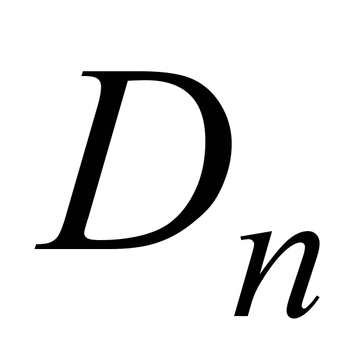
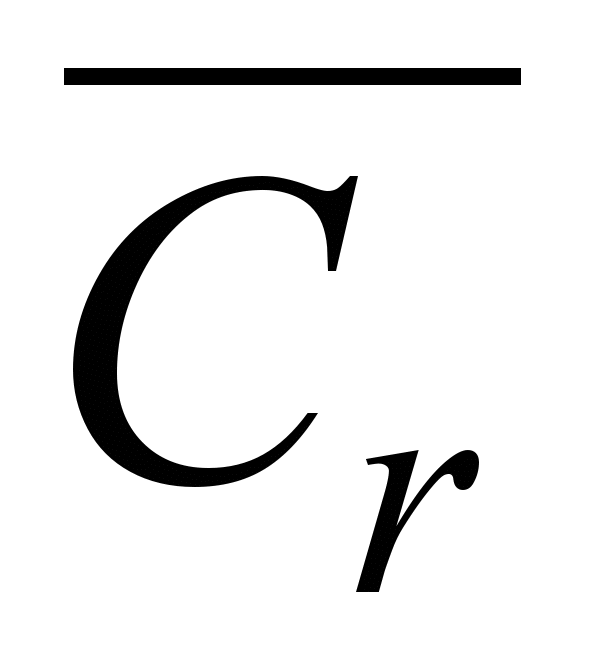

<!-- (C) 2015 Rozum Halina, BSUIR, Belarus -->
<!DOCTYPE HTML PUBLIC "-//W3C//DTD HTML 4.0 Transitional//RU">
<HTML>
<HEAD>
<LINK rel=stylesheet href="../../../../Оболочка/css/style.css" type=text/css>
<META HTTP-EQUIV="Content-Type" CONTENT="text/html" charset="utf8">
<META HTTP-EQUIV="Content-Language" CONTENT="ru">
<title>LB1 - Программа дисциплины  &quot;СХЕМОТЕХНИКА&quot;</title>
<base target="_top">
</HEAD><BODY>
<table width="100%" border="0" cellpadding="0" cellspacing="3" background="../../../../Оболочка/images/background.jpg">
  <tr>
    <td width="13%" rowspan=3 align="center" ></td>
  <tr>
  <td width="70%" colspan=2 align="center" valign="middle">
                    <H1 align="center">электронный ресурс по учебной дисциплине<BR>
        &quot;СХЕМОТЕХНИКА&quot;<BR>
        для специальности: </H1> 1-58 01 01 - &quot;Инженерно-психологическое обеспечение информационных технологий&quot;
                </td>
    <td width="12%" rowspan=3 align="center" >&nbsp;</td>
  <Tr>
    <td align=center colspan=2><var class="normal"><A HREF="../../../../index.html">Оглавление</A> |
	<A HREF="../../../../Программа/programm.html" TITLE="Программа курса (Откроется в новом окне)">Программа</A> |
	<A HREF="../../../../Теория/theory.html">Теория</a> |
							<strong>Практика</strong> |
	<A HREF="../../../../Контроль_знаний/test.html">Контроль знаний</A> |
	<A HREF="../../../../Об авторах/author.html">Об авторах</A></var> </td>
  <tr>
</table>
<table style="margin:0 auto;" width="90%" border="0" cellpadding="0" cellspacing="0">
<td><A HREF="../../../../Практика/practice.html">Практика</A>
                  <p>ЛАБОРАТОРНАЯ  РАБОТА № 14</p>
 <div> <p><b><span>Триггеры </b> <br>Изучение методов логического синтеза и функционирования основных типов триггеров.<o:p></o:p></span></p>
<p><b><span> Цель работы</span></b></p>


	<P LANG="ru-RU" CLASS="western" ALIGN=CENTER STYLE="text-indent: 0.49in; margin-bottom: 0in">
	<FONT SIZE=4><B>Лабораторная работа №6</B></FONT></P>
	<P LANG="ru-RU" CLASS="western" ALIGN=CENTER STYLE="margin-left: 0.39in; margin-bottom: 0in">
	<FONT SIZE=4><B>ТРИГГЕРЫ</B></FONT></P>
	<P LANG="ru-RU" CLASS="western" ALIGN=CENTER STYLE="margin-left: 0.39in; margin-bottom: 0in">
	<BR>
	</P>
	<OL>
		<LI><P LANG="ru-RU" CLASS="western" STYLE="margin-bottom: 0in"><B>ЦЕЛЬ
		ЛАБОРАТОРНОЙ  РАБОТЫ </B>
		</P>
	</OL>
	<P LANG="ru-RU" CLASS="western" STYLE="text-indent: 0.5in; margin-bottom: 0in">
	<FONT SIZE=4>Изучение основ теории, методов
	логического синтеза и функционирования
	основных типов триггеров.</FONT></P>
	<P LANG="ru-RU" CLASS="western" STYLE="text-indent: 0.5in; margin-bottom: 0in">
	<BR>
	</P>
	<OL START=2>
		<LI><P LANG="ru-RU" CLASS="western" STYLE="margin-bottom: 0in"><B>КРАТКИЕ
		ТЕОРЕТИЧЕСКИЕ СВЕДЕНИЯ</B></P>
	</OL>
	<P LANG="ru-RU" ALIGN=JUSTIFY STYLE="text-indent: 0.5in; margin-bottom: 0in">
	<FONT SIZE=4>Триггером называется устройство,
	имеющее два устойчивых состояния и
	способное под действием управляющих
	сигналов скачкообразно переходить из
	одного состояния в другое. Одно состояние
	называется единичным, а второе - нулевым.
	В общем случае, триггер имеет два выхода-
	прямой </FONT><FONT SIZE=4><SPAN LANG="en-US">Q</SPAN></FONT><FONT SIZE=4>
	 и инверсный </FONT><SUB></SUB><FONT SIZE=4>,
	поскольку логическое состояние одного
	выхода всегда инверсно логическому
	состоянию другого. Состояние триггера
	определяется логическим уровнем на
	прямом выходе. Если  на прямом выходе
	имеется потенциал соответствующий
	лог.1, то триггер находиться в единичном
	состоянии или говорят, что триггер
	установлен (при этом потенциал на
	инверсном  выходе соответствует лог.0).
	И если на прямом выходе имеется потенциал,
	соответствующий лог.0, то триггер
	находиться в нулевом состоянии или
	говорят, что триггер сброшен  (и при
	этом потенциал на инверсном выходе
	соответствует лог.1).</FONT></P>
	<P LANG="ru-RU" ALIGN=JUSTIFY STYLE="text-indent: 0.5in; margin-bottom: 0in">
	<FONT SIZE=4>В качестве основных классификационных
	признаков используются функциональный
	признак и способ записи информации. </FONT>
	</P>
	<P LANG="ru-RU" ALIGN=JUSTIFY STYLE="text-indent: 0.5in; margin-bottom: 0in">
	<FONT SIZE=4>По функциональному признаку,
	т.е. по виду характеристического
	уравнения, связывающего логические
	переменные на входах и выходах триггера
	в момент срабатывания </FONT><SUB></SUB><FONT SIZE=4>
	и после срабатывания </FONT><SUB></SUB><FONT SIZE=4>,
	различают триггеры </FONT><FONT SIZE=4><SPAN LANG="en-US">RS</SPAN></FONT><FONT SIZE=4>-,
	</FONT><FONT SIZE=4><SPAN LANG="en-US">D</SPAN></FONT><FONT SIZE=4>-,
	</FONT><FONT SIZE=4><SPAN LANG="en-US">JK</SPAN></FONT><FONT SIZE=4>-,
	</FONT><FONT SIZE=4><SPAN LANG="en-US">T</SPAN></FONT><FONT SIZE=4>-
	и других типов.</FONT></P>
	<P LANG="ru-RU" ALIGN=JUSTIFY STYLE="text-indent: 0.5in; margin-bottom: 0in">
	<FONT SIZE=4>По способу записи информации
	триггеры делятся на асинхронные
	(нетактируемые) и синхронные (тактируемые).
	 В асинхронных триггерах запись
	информации происходит под действием
	изменений входных сигналов с момента
	подачи их на информационные входы. В
	синхронных триггерах запись информации
	происходит только при подаче сигнала
	синхронизации.</FONT></P>
	<P LANG="ru-RU" ALIGN=JUSTIFY STYLE="text-indent: 0.5in; margin-bottom: 0in">
	<FONT SIZE=4>По способу синхронизации триггеры
	подразделяются на три категории в
	зависимости от того, какие параметры
	синхросигнала используются для записи
	информации:</FONT></P>
	<P LANG="ru-RU" ALIGN=JUSTIFY STYLE="margin-left: 0.49in; margin-bottom: 0in">
	<FONT SIZE=4>а) со статическим управлением;</FONT></P>
	<P LANG="ru-RU" ALIGN=JUSTIFY STYLE="margin-left: 0.49in; margin-bottom: 0in">
	<FONT SIZE=4>б) двухступенчатые, управляемые
	синхроимпульсом;</FONT></P>
	<P LANG="ru-RU" ALIGN=JUSTIFY STYLE="margin-left: 0.49in; margin-bottom: 0in">
	<FONT SIZE=4>в) с динамическим управлением.</FONT></P>
	<P LANG="ru-RU" ALIGN=JUSTIFY STYLE="text-indent: 0.5in; margin-bottom: 0in">
	<FONT SIZE=4>Синхронный триггер со статическим
	управлением  воспринимает информационные
	сигналы, когда синхросигнал достигает
	своего активного уровня. Характерной
	особенностью этого типа является то,
	что смена управляющего сигнала в течение
	времени действия импульса синхронизации
	вызывает новые срабатывания триггеров,
	т.е. синхронные триггеры со статическим
	управлением при активном уровне
	синхросигнала ведут себя подобно
	асинхронным.</FONT></P>
	<P LANG="ru-RU" ALIGN=JUSTIFY STYLE="text-indent: 0.5in; margin-bottom: 0in">
	<FONT SIZE=4>Асинхронные триггеры и синхронные
	триггеры со статическим управлением
	имеют ограниченное применение. Например,
	эти триггеры не могут использоваться
	в счётчиках или регистрах сдвига. В
	зарубежной литературе триггерные
	устройства подразделяются на два типа
	–</FONT><FONT SIZE=4><SPAN LANG="en-US">latch</SPAN></FONT><FONT SIZE=4>(</FONT><FONT SIZE=4><SPAN LANG="en-US">s</SPAN></FONT><FONT SIZE=4>)
	и </FONT><FONT SIZE=4><SPAN LANG="en-US">flip</SPAN></FONT><FONT SIZE=4>-</FONT><FONT SIZE=4><SPAN LANG="en-US">flop</SPAN></FONT><FONT SIZE=4>(</FONT><FONT SIZE=4><SPAN LANG="en-US">s</SPAN></FONT><FONT SIZE=4>)
	(</FONT><FONT SIZE=4><SPAN LANG="en-US">FF</SPAN></FONT><FONT SIZE=4>).
	Асинхронные триггеры и синхронные  со
	статическим управлением относятся к
	</FONT><FONT SIZE=4><SPAN LANG="en-US">latch</SPAN></FONT><FONT SIZE=4>
	типу, а двухступенчатые триггеры,
	управляемые синхроимпульсом, и триггеры
	с динамическим управлением относятся
	к </FONT><FONT SIZE=4><SPAN LANG="en-US">FF</SPAN></FONT><FONT SIZE=4>
	типу. Двухступенчатые  триггеры,
	управляемые импульсом  и триггеры с
	динамическим управлением являются
	более универсальными.</FONT></P>
	<P LANG="ru-RU" ALIGN=JUSTIFY STYLE="text-indent: 0.5in; margin-bottom: 0in">
	<FONT SIZE=4>Двухступенчатые  триггеры,
	управляемые импульсом, воспринимают
	информационные сигналы, когда синхросигнал
	изменяет своё состояние с низкого на
	высокое, а затем снова на низкое, т.е.
	управляются импульсом.</FONT></P>
	<P LANG="ru-RU" ALIGN=JUSTIFY STYLE="text-indent: 0.5in; margin-bottom: 0in">
	<FONT SIZE=4>Синхронный триггер с динамическим
	управлением воспринимает информационные
	сигналы только в момент действия
	положительного перехода (переход
	0</FONT><SUB></SUB><FONT SIZE=4>1=</FONT><SUB></SUB><FONT SIZE=4>)
	или в момент действия отрицательного
	перехода (переход 1</FONT><SUB></SUB><FONT SIZE=4>0=</FONT><SUB></SUB><FONT SIZE=4>)
	синхроимпульса. Вход  триггера </FONT><FONT SIZE=4><SPAN LANG="en-US">C</SPAN></FONT><FONT SIZE=4>
	(или </FONT><FONT SIZE=4><SPAN LANG="en-US">CK</SPAN></FONT><FONT SIZE=4>)
	называется прямым динамическим, если
	переключение триггера осуществляется
	положительным перепадом импульса
	синхронизации. Вход называется инверсным
	динамическим, если переключение триггера
	осуществляется отрицательным перепадом
	синхросигнала. Характерной особенностью
	триггеров с динамическим управлением
	является то, что в остальное время
	импульса синхронизации триггер не
	реагирует на информационные сигналы
	и остаётся в прежнем состоянии независимо
	от уровня синхросигнала.</FONT></P>
	<P LANG="ru-RU" ALIGN=JUSTIFY STYLE="text-indent: 0.5in; margin-bottom: 0in">
	<FONT SIZE=4>В двухступенчатых триггерах
	переход в новое состояние происходит
	после окончания действия синхроимпульса.</FONT></P>
	<P LANG="ru-RU" ALIGN=JUSTIFY STYLE="text-indent: 0.5in; margin-bottom: 0in">
	<FONT SIZE=4><B>Асинхронный </B></FONT><FONT SIZE=4><SPAN LANG="en-US"><B>RS</B></SPAN></FONT><FONT SIZE=4><B>-
	триггер (</B></FONT><FONT SIZE=4><SPAN LANG="en-US"><B>SR</B></SPAN></FONT><FONT SIZE=4><B>-</B></FONT><FONT SIZE=4><SPAN LANG="en-US"><B>latch</B></SPAN></FONT><FONT SIZE=4><B>)
	</B></FONT><FONT SIZE=4>‒ это устройство с двумя
	устойчивыми состояниями, имеющее два
	входа </FONT><FONT SIZE=4><SPAN LANG="en-US">S</SPAN></FONT><FONT SIZE=4>(</FONT><FONT SIZE=4><SPAN LANG="en-US">Set</SPAN></FONT><FONT SIZE=4>-
	установка) и </FONT><FONT SIZE=4><SPAN LANG="en-US">R</SPAN></FONT><FONT SIZE=4>(</FONT><FONT SIZE=4><SPAN LANG="en-US">Reset</SPAN></FONT><FONT SIZE=4>-
	сброс) и два выхода </FONT>
	<FONT SIZE=4>
	 и .  Асинхронный триггер функционирует
	 в соответствии с таблицей истинности,
	табл. 6.1. </FONT>
	</P>
	<P LANG="ru-RU" STYLE="margin-left: 0.2in; text-indent: 0.39in; margin-bottom: 0in">

	                         <FONT SIZE=4>Таблица 6.1  </FONT>
	</P>
	<P LANG="ru-RU" ALIGN=JUSTIFY STYLE="text-indent: 0.5in; margin-bottom: 0in">
	<CENTER>
		<TABLE DIR="LTR" WIDTH=554 CELLPADDING=7 CELLSPACING=0>
			<COL WIDTH=181>
			<COL WIDTH=68>
			<COL WIDTH=261>
			<TR VALIGN=TOP>
				<TD WIDTH=181 STYLE="border-top: 1px solid #000000; border-bottom: 1px solid #000000; border-left: 1px solid #000000; border-right: none; padding-top: 0in; padding-bottom: 0in; padding-left: 0.08in; padding-right: 0in">
					<P LANG="ru-RU" CLASS="western" ALIGN=CENTER></P>
				</TD>
				<TD WIDTH=68 STYLE="border-top: 1px solid #000000; border-bottom: 1px solid #000000; border-left: 1px solid #000000; border-right: none; padding-top: 0in; padding-bottom: 0in; padding-left: 0.08in; padding-right: 0in">
					<P LANG="ru-RU" CLASS="western" ALIGN=CENTER></P>
				</TD>
				<TD ROWSPAN=2 WIDTH=261 STYLE="border: 1px solid #000000; padding: 0in 0.08in">
					<P LANG="ru-RU" CLASS="western" STYLE="margin-bottom: 0in">
					</P>
					<P LANG="ru-RU" CLASS="western">        <FONT SIZE=4>Режим
					работы</FONT></P>
				</TD>
			</TR>
			<TR VALIGN=TOP>
				<TD WIDTH=181 HEIGHT=7 STYLE="border-top: 1px solid #000000; border-bottom: 1px solid #000000; border-left: 1px solid #000000; border-right: none; padding-top: 0in; padding-bottom: 0in; padding-left: 0.08in; padding-right: 0in">
					<P LANG="ru-RU" CLASS="western" ALIGN=CENTER>

					

					</P>
				</TD>
				<TD WIDTH=68 STYLE="border-top: 1px solid #000000; border-bottom: 1px solid #000000; border-left: 1px solid #000000; border-right: none; padding-top: 0in; padding-bottom: 0in; padding-left: 0.08in; padding-right: 0in">
					<P LANG="ru-RU" CLASS="western" ALIGN=CENTER></P>
				</TD>
			</TR>
			<TR VALIGN=TOP>
				<TD WIDTH=181 STYLE="border-top: 1px solid #000000; border-bottom: 1px solid #000000; border-left: 1px solid #000000; border-right: none; padding-top: 0in; padding-bottom: 0in; padding-left: 0.08in; padding-right: 0in">
					<P LANG="ru-RU" CLASS="western" ALIGN=CENTER STYLE="margin-bottom: 0in">
					<FONT SIZE=4>0 0    </FONT><FONT SIZE=4><SPAN LANG="en-US">
					</SPAN></FONT><FONT SIZE=4> 0</FONT></P>
					<P LANG="ru-RU" CLASS="western" ALIGN=CENTER><FONT SIZE=4>1
					0    </FONT><FONT SIZE=4><SPAN LANG="en-US"> </SPAN></FONT><FONT SIZE=4>
					0</FONT></P>
				</TD>
				<TD WIDTH=68 STYLE="border-top: 1px solid #000000; border-bottom: 1px solid #000000; border-left: 1px solid #000000; border-right: none; padding-top: 0in; padding-bottom: 0in; padding-left: 0.08in; padding-right: 0in">
					<P LANG="ru-RU" CLASS="western" ALIGN=CENTER STYLE="margin-bottom: 0in">
					<FONT SIZE=4>0</FONT></P>
					<P LANG="ru-RU" CLASS="western" ALIGN=CENTER><FONT SIZE=4>1</FONT></P>
				</TD>
				<TD WIDTH=261 STYLE="border: 1px solid #000000; padding: 0in 0.08in">
					<P LANG="ru-RU" CLASS="western" STYLE="margin-bottom: 0in">

					</P>
					<P LANG="ru-RU" CLASS="western">        <FONT SIZE=4>
					Хранение информации</FONT></P>
				</TD>
			</TR>
			<TR VALIGN=TOP>
				<TD WIDTH=181 STYLE="border-top: 1px solid #000000; border-bottom: 1px solid #000000; border-left: 1px solid #000000; border-right: none; padding-top: 0in; padding-bottom: 0in; padding-left: 0.08in; padding-right: 0in">
					<P LANG="ru-RU" CLASS="western" ALIGN=CENTER STYLE="margin-bottom: 0in">
					<FONT SIZE=4>0   </FONT><FONT SIZE=4><SPAN LANG="en-US">    </SPAN></FONT><FONT SIZE=4>
					1
					</FONT><FONT SIZE=4><SPAN LANG="en-US">    </SPAN></FONT><FONT SIZE=4>
					0</FONT></P>
					<P LANG="ru-RU" CLASS="western" ALIGN=CENTER><FONT SIZE=4>1    </FONT><FONT SIZE=4><SPAN LANG="en-US">
					  </SPAN></FONT><FONT SIZE=4>1 </FONT><FONT SIZE=4><SPAN LANG="en-US">
					 </SPAN></FONT><FONT SIZE=4> </FONT><FONT SIZE=4><SPAN LANG="en-US">
					 </SPAN></FONT><FONT SIZE=4>0</FONT></P>
				</TD>
				<TD WIDTH=68 STYLE="border-top: 1px solid #000000; border-bottom: 1px solid #000000; border-left: 1px solid #000000; border-right: none; padding-top: 0in; padding-bottom: 0in; padding-left: 0.08in; padding-right: 0in">
					<P LANG="ru-RU" CLASS="western" ALIGN=CENTER STYLE="margin-bottom: 0in">
					<FONT SIZE=4>1</FONT></P>
					<P LANG="ru-RU" CLASS="western" ALIGN=CENTER><FONT SIZE=4>1</FONT></P>
				</TD>
				<TD WIDTH=261 STYLE="border: 1px solid #000000; padding: 0in 0.08in">
					<P LANG="ru-RU" CLASS="western" STYLE="margin-bottom: 0in"><BR>
					</P>
					<P LANG="ru-RU" CLASS="western">        <FONT SIZE=4>
					Установка лог.1</FONT></P>
				</TD>
			</TR>
			<TR VALIGN=TOP>
				<TD WIDTH=181 STYLE="border-top: 1px solid #000000; border-bottom: 1px solid #000000; border-left: 1px solid #000000; border-right: none; padding-top: 0in; padding-bottom: 0in; padding-left: 0.08in; padding-right: 0in">
					<P LANG="ru-RU" CLASS="western" ALIGN=CENTER STYLE="margin-bottom: 0in">
					<FONT SIZE=4>0   </FONT><FONT SIZE=4><SPAN LANG="en-US">   </SPAN></FONT><FONT SIZE=4>
					0</FONT><FONT SIZE=4><SPAN LANG="en-US">    </SPAN></FONT><FONT SIZE=4>
					 1</FONT></P>
					<P LANG="ru-RU" CLASS="western" ALIGN=CENTER><FONT SIZE=4>1    </FONT><FONT SIZE=4><SPAN LANG="en-US">
					  </SPAN></FONT><FONT SIZE=4>0 </FONT><FONT SIZE=4><SPAN LANG="en-US">
					   </SPAN></FONT><FONT SIZE=4> 1</FONT></P>
				</TD>
				<TD WIDTH=68 STYLE="border-top: 1px solid #000000; border-bottom: 1px solid #000000; border-left: 1px solid #000000; border-right: none; padding-top: 0in; padding-bottom: 0in; padding-left: 0.08in; padding-right: 0in">
					<P LANG="ru-RU" CLASS="western" ALIGN=CENTER STYLE="margin-bottom: 0in">
					<FONT SIZE=4>0</FONT></P>
					<P LANG="ru-RU" CLASS="western" ALIGN=CENTER><FONT SIZE=4>0</FONT></P>
				</TD>
				<TD WIDTH=261 STYLE="border: 1px solid #000000; padding: 0in 0.08in">
					<P LANG="ru-RU" CLASS="western" STYLE="margin-bottom: 0in"><BR>
					</P>
					<P LANG="ru-RU" CLASS="western">        <FONT SIZE=4>
					Установка лог.0</FONT></P>
				</TD>
			</TR>
			<TR VALIGN=TOP>
				<TD WIDTH=181 STYLE="border-top: 1px solid #000000; border-bottom: 1px solid #000000; border-left: 1px solid #000000; border-right: none; padding-top: 0in; padding-bottom: 0in; padding-left: 0.08in; padding-right: 0in">
					<P LANG="ru-RU" CLASS="western" ALIGN=CENTER STYLE="margin-bottom: 0in">
					<FONT SIZE=4>0    </FONT><FONT SIZE=4><SPAN LANG="en-US">   </SPAN></FONT><FONT SIZE=4>
					1</FONT><FONT SIZE=4><SPAN LANG="en-US">
					   </SPAN></FONT><FONT SIZE=4>  1</FONT></P>
					<P LANG="ru-RU" CLASS="western" ALIGN=CENTER><FONT SIZE=4>1    </FONT><FONT SIZE=4><SPAN LANG="en-US">
					  </SPAN></FONT><FONT SIZE=4>1  </FONT><FONT SIZE=4><SPAN LANG="en-US">
					   </SPAN></FONT><FONT SIZE=4>1</FONT></P>
				</TD>
				<TD WIDTH=68 STYLE="border-top: 1px solid #000000; border-bottom: 1px solid #000000; border-left: 1px solid #000000; border-right: none; padding-top: 0in; padding-bottom: 0in; padding-left: 0.08in; padding-right: 0in">
					<P CLASS="western" ALIGN=CENTER STYLE="margin-bottom: 0in"><FONT SIZE=4>
					x</FONT></P>
					<P CLASS="western" ALIGN=CENTER><FONT SIZE=4>x</FONT></P>
				</TD>
				<TD WIDTH=261 STYLE="border: 1px solid #000000; padding: 0in 0.08in">
					<P LANG="ru-RU" CLASS="western" STYLE="margin-bottom: 0in">
					<FONT SIZE=4>Неопределённость</FONT></P>
					<P LANG="ru-RU" CLASS="western">        <FONT SIZE=4>
					Неопределённость</FONT></P>
				</TD>
			</TR>
		</TABLE>
	</CENTER>
	</P>
	<P LANG="ru-RU" ALIGN=JUSTIFY STYLE="text-indent: 0.5in; margin-bottom: 0in">
	<FONT SIZE=4>Если входы  и  оба в состоянии
	лог.0, то триггер не изменяет свое
	    состояние, т.е. триггер хранит один
	бит информации.</FONT></P>
	<P LANG="ru-RU" ALIGN=JUSTIFY STYLE="text-indent: 0.5in; margin-bottom: 0in">
	<FONT SIZE=4>Если =1 и =0, то независимо от того
	в каком состоянии триггер находился,
	следующее состояние триггера =1.</FONT></P>
	<P LANG="ru-RU" ALIGN=JUSTIFY STYLE="text-indent: 0.5in; margin-bottom: 0in">
	<FONT SIZE=4>Если =0 и =1, то независимо от того
	в каком состоянии находился триггер,
	следующее его состояние  =0.</FONT></P>
	<P LANG="ru-RU" ALIGN=JUSTIFY STYLE="text-indent: 0.5in; margin-bottom: 0in">
	<FONT SIZE=4>Комбинация входных сигналов
	=</FONT>=1<FONT SIZE=4>
	является неопределенной, поскольку
	триггер после воздействия на входах
	активных уровней может равновероятно
	перейти как в нулевое, так и в единичное
	состояние. Поэтому одновременная подача
	активных уровней на входы </FONT><FONT SIZE=4><SPAN LANG="en-US">S</SPAN></FONT><FONT SIZE=4>
	и </FONT><FONT SIZE=4><SPAN LANG="en-US">R</SPAN></FONT><FONT SIZE=4>
	не допускается.</FONT></P>
	<P LANG="ru-RU" ALIGN=JUSTIFY STYLE="text-indent: 0.5in; margin-bottom: 0in">
	<FONT SIZE=4>Работа </FONT><FONT SIZE=4><SPAN LANG="en-US">RS</SPAN></FONT><FONT SIZE=4>-триггера
	также может быть представлена функцией
	на карте Карно и логическим уравнением.
	Входные и выходные переменные триггера
	в момент срабатывания  и после срабатывания
	 можно представить функциональной
	зависимостью               </FONT>
	</P>
	<P LANG="ru-RU" STYLE="text-indent: 0.3in; margin-bottom: 0in" class="style1">
	                <FONT SIZE=4><BR>
	                </FONT>
	=<SPAN LANG="en-US"><I>f</I></SPAN><I>(</I>,,<I>),
	                                                     </I><FONT SIZE=4>(6.1)</FONT></P>
	<P LANG="ru-RU" ALIGN=JUSTIFY STYLE="text-indent: 0.3in; margin-bottom: 0in">

	</P>
	<P LANG="ru-RU" ALIGN=JUSTIFY STYLE="text-indent: 0.5in; margin-bottom: 0in">
	 <FONT SIZE=4>где ,- состояние информационных
	входов,</FONT></P>
	<P LANG="ru-RU" ALIGN=JUSTIFY STYLE="margin-left: 0.5in; margin-bottom: 0in">
	<FONT SIZE=4>- значение выходного сигнала
	триггера в момент времени ,</FONT></P>
	<P LANG="ru-RU" ALIGN=JUSTIFY STYLE="text-indent: 0.5in; margin-bottom: 0in">
	 <FONT SIZE=4>- значение выходного сигнала
	триггера в момент времени .</FONT></P>
	<P LANG="ru-RU" ALIGN=JUSTIFY STYLE="text-indent: 0.1in; margin-bottom: 0in">
	<BR>
	</P>
	<P LANG="ru-RU" ALIGN=JUSTIFY STYLE="text-indent: 0.5in; margin-bottom: 0in">
	<FONT SIZE=4>Функция алгебры логики, табл.6.1
	может быть представлена картой Карно,
	рис. 6.1. Значения ФАЛ, показанные значком
	</FONT><FONT SIZE=4><SPAN LANG="en-US">x</SPAN></FONT><FONT SIZE=4>,
	указывают на то, что данная ФАЛ является
	недоопределённой. При минимизации ФАЛ
	мы можем её доопределить, так как нам
	это удобно, чтобы получить минимальную
	форму, рис.6.1.</FONT></P>
	<P LANG="en-US" CLASS="western" STYLE="margin-bottom: 0in">&nbsp;</P>
	<P LANG="ru-RU" STYLE="margin-bottom: 0in" class="style1">
	<BR>
	</P>
	<P LANG="ru-RU" STYLE="margin-bottom: 0in">&nbsp;</P>
	<P LANG="ru-RU" STYLE="margin-bottom: 0in">&nbsp;</P>
	<P LANG="ru-RU" ALIGN=CENTER STYLE="margin-left: 0.39in; margin-bottom: 0in">
	Рис.6.1. Карты Карно для минимизации
	выходных функций <SPAN LANG="en-US">RS</SPAN>-триггера
		</P>
	<P LANG="ru-RU" STYLE="margin-bottom: 0in">
	</P>
	<P LANG="ru-RU" STYLE="text-indent: 0.5in; margin-bottom: 0in"><FONT SIZE=4>Выражения</FONT></P>
	<P LANG="ru-RU" STYLE="margin-left: 0.2in; margin-bottom: 0in" class="style1">
	                        &nbsp;</P>
	<P LANG="ru-RU" CLASS="western" STYLE="margin-bottom: 0in">
	<FONT SIZE=4>используются для построения
	</FONT><FONT SIZE=4><SPAN LANG="en-US">RS</SPAN></FONT><FONT SIZE=4>-триггера.
	</FONT>
	</P>
	<P LANG="ru-RU" CLASS="western" STYLE="text-indent: 0.5in; margin-bottom: 0in">
	<FONT SIZE=4>Применяя инверсию и закон де
	Моргана, выражения (6.2) и (6.3) могут быть
	преобразованы следующим образом:</FONT></P>
	<P LANG="ru-RU" CLASS="western" STYLE="margin-left: 0.2in; margin-bottom: 0in; text-align: center;">
	                                       <FONT SIZE=4>
											</FONT></P>
	<P LANG="ru-RU" CLASS="western" STYLE="margin-left: 0.2in; margin-bottom: 0in">
	                                       <FONT SIZE=4>Выражения (6.4) и (6.5) используются
	для реализации </FONT><FONT SIZE=4><SPAN LANG="en-US">RS</SPAN></FONT><FONT SIZE=4>-триггера
	на элементах ИЛИ-НЕ.</FONT></P>
	<P LANG="ru-RU" CLASS="western" STYLE="text-indent: 0.5in; margin-bottom: 0in">
	<FONT SIZE=4>Применяя двойную инверсию и
	закон де Моргана, выражения (6.2) и (6.3)
	могут быть преобразованы следующим
	образом:</FONT></P>
	<P LANG="ru-RU" CLASS="western" STYLE="margin-left: 0.2in; margin-bottom: 0in; text-align: center;">

	
	<FONT SIZE=4>,
	     (6.6)</FONT></P>
	<P LANG="ru-RU" CLASS="western" STYLE="margin-left: 0.2in; margin-bottom: 0in; text-align: center;">

	
	<FONT SIZE=4>.
	  (6.7)</FONT></P>
	<P LANG="ru-RU" CLASS="western" STYLE="text-indent: 0.49in; margin-bottom: 0in">
	<FONT SIZE=4>Выражения (6.6) и (6.7) используются
	для реализации </FONT><FONT SIZE=4><SPAN LANG="en-US">RS</SPAN></FONT><FONT SIZE=4>-триггера
	на элементах И-НЕ.</FONT></P>
	<P LANG="ru-RU" CLASS="western" STYLE="text-indent: 0.49in; margin-bottom: 0in">
	<FONT SIZE=4>Реализация </FONT><FONT SIZE=4><SPAN LANG="en-US">RS</SPAN></FONT><FONT SIZE=4>-триггера
	на элементах ИЛИ-НЕ показана на
	рис.6.2а,б.</FONT></P>
	<P LANG="ru-RU" CLASS="western" STYLE="text-indent: 0.49in; margin-bottom: 0in">
	<BR>
	</P>
	<P LANG="ru-RU" CLASS="western" STYLE="margin-bottom: 0in">

	</P>
	<P LANG="ru-RU" CLASS="western" ALIGN=CENTER STYLE="margin-bottom: 0in">
	</P>
	<P CLASS="western" STYLE="margin-bottom: 0in"><BR>
	</P>
	<P LANG="ru-RU" CLASS="western" STYLE="margin-bottom: 0in">
	</P>
	<P LANG="ru-RU" CLASS="western" ALIGN=CENTER STYLE="margin-left: 0.49in; margin-bottom: 0in; line-height: 150%">
	Рис. 6.2. <SPAN LANG="en-US">RS</SPAN>-триггеры на
	элементах ИЛИ-НЕ</P>
	<P LANG="ru-RU" CLASS="western" ALIGN=JUSTIFY STYLE="text-indent: 0.5in; margin-bottom: 0in">
	<FONT SIZE=4>Обычно </FONT><FONT SIZE=4><SPAN LANG="en-US">RS</SPAN></FONT><FONT SIZE=4>-триггер
	изображается с расположением элементов
	ИЛИ-НЕ, как показано на рис. 6.2в.  На рис.
	6.2г  показано условное изображение
	</FONT><FONT SIZE=4><SPAN LANG="en-US">RS</SPAN></FONT><FONT SIZE=4>-триггера.</FONT></P>
	<P LANG="ru-RU" CLASS="western" ALIGN=JUSTIFY STYLE="text-indent: 0.5in; margin-bottom: 0in">
	<FONT SIZE=4>При анализе работы </FONT><FONT SIZE=4><SPAN LANG="en-US">RS</SPAN></FONT><FONT SIZE=4>-триггера
	и при синтезе других триггеров
	используется таблица переходов
	</FONT><FONT SIZE=4><SPAN LANG="en-US">RS</SPAN></FONT><FONT SIZE=4>-триггера
	(таблица 6.2), которая определяет комбинации
	входных сигналов, необходимых для того
	или иного перехода триггера, т.е. триггер
	в момент времени  находится в каком-то
	состоянии (=0 или =1), и определяются
	состояния входов, чтобы триггер перешёл
	в определённое следующее состояние .</FONT></P>
	<P LANG="ru-RU" CLASS="western" ALIGN=JUSTIFY STYLE="text-indent: 0.1in; margin-bottom: 0in">
	<BR>
	</P>
	<P LANG="ru-RU" CLASS="western" ALIGN=JUSTIFY STYLE="text-indent: 0.1in; margin-bottom: 0in">
	<BR>
	</P>
	<P LANG="ru-RU" CLASS="western" ALIGN=JUSTIFY STYLE="text-indent: 0.1in; margin-bottom: 0in">
	<BR>
	</P>
	<P LANG="ru-RU" CLASS="western" ALIGN=JUSTIFY STYLE="text-indent: 0.1in; margin-bottom: 0in">
	<BR>
	</P>
	<P LANG="ru-RU" CLASS="western" STYLE="margin-bottom: 0in">


	</P>
	<P LANG="ru-RU" CLASS="western" STYLE="margin-bottom: 0in; text-align: center;">
	&nbsp;</P>
	<P CLASS="western" STYLE="margin-bottom: 0in"><BR>
	</P>
	<P LANG="ru-RU" CLASS="western" STYLE="text-indent: 0.5in; margin-bottom: 0in">
	<FONT SIZE=4>На рис. 6.3 приведены временные
	диаграммы, поясняющие принцип работы
	асинхронного </FONT><FONT SIZE=4><SPAN LANG="en-US">RS</SPAN></FONT><FONT SIZE=4>-триггера,
	рис.6.2.</FONT></P>
	<P LANG="ru-RU" CLASS="western" ALIGN=CENTER STYLE="margin-bottom: 0in">
	</P>
	<P LANG="ru-RU" CLASS="western" ALIGN=CENTER STYLE="margin-left: 0.39in; margin-bottom: 0in">
	<BR>
	</P>
	<P LANG="ru-RU" CLASS="western" ALIGN=CENTER STYLE="margin-left: 0.39in; margin-bottom: 0in">
	Рис. 6.3. Временные диаграммы работы
	асинхронного <SPAN LANG="en-US">RS</SPAN>-триггера</P>
	<P LANG="ru-RU" CLASS="western" STYLE="text-indent: 0.38in; margin-bottom: 0in">

	</P>
	<P LANG="ru-RU" CLASS="western" STYLE="text-indent: 0.5in; margin-bottom: 0in">
	<FONT SIZE=4>Для устойчивого функционирования
	триггера длительность сигнала на входах
	</FONT><FONT SIZE=4><SPAN LANG="en-US">R</SPAN></FONT><FONT SIZE=4>
	и </FONT><FONT SIZE=4><SPAN LANG="en-US">S</SPAN></FONT><FONT SIZE=4>
	должна быть не меньше времени переключения
	триггера, . Информационные сигналы
	должны поступать на входы поочерёдно
	и только после окончания переходных
	процессов в триггере, тогда максимальная
	частота переключения триггера будет
	равна:</FONT></P>
	<P LANG="ru-RU" CLASS="western" STYLE="margin-bottom: 0in; text-align: center;">

	                         &nbsp;</P>
	<P LANG="ru-RU" CLASS="western" STYLE="text-indent: 0.5in; margin-bottom: 0in">
	<FONT SIZE=4>Однако при  ,длительность выходных
	сигналов не будет превышать . Такие
	сигналы не являются достаточными для
	надежной передачи информации в логическую
	цепь, поэтому максимальная рабочая
	частота триггера,  определяется как:</FONT></P>
	<P LANG="ru-RU" CLASS="western" STYLE="margin-bottom: 0in; text-align: center;">

	<FONT SIZE=4>.&nbsp;&nbsp;&nbsp;&nbsp;&nbsp;&nbsp;&nbsp;&nbsp;&nbsp;&nbsp;&nbsp;&nbsp;&nbsp;&nbsp;&nbsp;&nbsp;&nbsp;&nbsp;&nbsp;&nbsp;&nbsp;&nbsp;&nbsp;&nbsp;&nbsp;&nbsp; (6.9)</FONT></P>
	<P LANG="ru-RU" CLASS="western" STYLE="text-indent: 0.5in; margin-bottom: 0in; text-align: center;">
	</P>
	<P LANG="ru-RU" CLASS="western" STYLE="text-indent: 0.5in; margin-bottom: 0in">
	<FONT SIZE=4>Воспользуемся выражениями
	(6.6) и (6.7) и реализуем </FONT><FONT SIZE=4><SPAN LANG="en-US">RS</SPAN></FONT><FONT SIZE=4>-триггер
	на элементах И-НЕ. Эта реализация
	показана на рис.6.4 .                  </FONT>
	</P>
	<P LANG="ru-RU" CLASS="western" STYLE="text-indent: 0.5in; margin-bottom: 0in; text-align: center;">
	
	   <FONT SIZE=4>  </FONT>
	<FONT SIZE=4>
	               </FONT>
	</P>
	<P LANG="ru-RU" CLASS="western" ALIGN=CENTER STYLE="margin-bottom: 0in">
	</P>
	<P LANG="ru-RU" CLASS="western" ALIGN=CENTER STYLE="margin-left: 0.59in; margin-bottom: 0in">
	<BR>
	</P>
	<P LANG="ru-RU" CLASS="western" ALIGN=CENTER STYLE="margin-left: 0.59in; margin-bottom: 0in">
	Рис. 6.4. Асинхронный <SPAN LANG="en-US">RS</SPAN> -
	триггер:</P>
	<P LANG="ru-RU" CLASS="western" ALIGN=CENTER STYLE="margin-left: 0.59in; margin-bottom: 0in">
	а, б - построение  <SPAN LANG="en-US">RS</SPAN> -
	триггера,</P>
	<P LANG="ru-RU" CLASS="western" ALIGN=CENTER STYLE="margin-left: 0.59in; margin-bottom: 0in">
	                      в - изображение триггера
	на элементах И-НЕ</P>
	<P LANG="ru-RU" CLASS="western" ALIGN=CENTER STYLE="margin-left: 0.59in; margin-bottom: 0in">
	           г- условное изображение <SUB></SUB>-триггера.</P>
	<P LANG="ru-RU" CLASS="western" STYLE="margin-bottom: 0in"><BR>
	</P>
	<P LANG="ru-RU" CLASS="western" ALIGN=JUSTIFY STYLE="text-indent: 0.49in; margin-bottom: 0in">
	<FONT SIZE=4><SPAN LANG="en-US">RS</SPAN></FONT><FONT SIZE=4>-
	триггер на элементах И-НЕ, рис. 6.4,
	называется асинхронным триггером с
	инверсными входами.  Характеристическая
	таблица или таблица истинности такого
	триггера представлена табл.6.3, а таблица
	переходов, табл. 6.4.</FONT></P>
	<P LANG="ru-RU" CLASS="western" STYLE="margin-bottom: 0in"><BR>
	</P>
	<P LANG="ru-RU" CLASS="western" STYLE="text-indent: 0.49in; margin-bottom: 0in; text-align: center;">
	   <BR>
	</P>
	<P LANG="ru-RU" CLASS="western" STYLE="text-indent: 0.2in; margin-bottom: 0in">
	&nbsp;</P>
	<P LANG="ru-RU" CLASS="western" STYLE="margin-bottom: 0in"><BR>
	</P>
	<P LANG="ru-RU" CLASS="western" STYLE="text-indent: 0.5in; margin-bottom: 0in">
	<FONT SIZE=4>На рис. 6.5. показаны временные
	диаграммы, поясняющие принцип работы
	асинхронного </FONT><FONT SIZE=4><SPAN LANG="en-US">RS</SPAN></FONT><FONT SIZE=4>-триггера
	на элементах И-НЕ.</FONT></P>
	<P LANG="ru-RU" CLASS="western" STYLE="margin-bottom: 0in; text-align: center;"></P>
	<P LANG="ru-RU" CLASS="western" ALIGN=CENTER STYLE="margin-left: 0.49in; margin-bottom: 0in">
	Рис. 6.5. Временные диаграммы работы -
	триггера</P>
	<P LANG="ru-RU" CLASS="western" ALIGN=CENTER STYLE="margin-left: 0.49in; margin-bottom: 0in">
	<BR>
	</P>
	<P LANG="ru-RU" CLASS="western" ALIGN=CENTER STYLE="text-indent: 0.3in; margin-bottom: 0in">
	<FONT SIZE=4><B>Синхронный </B></FONT><FONT SIZE=4><SPAN LANG="en-US"><B>RS</B></SPAN></FONT><FONT SIZE=4><B>-триггер
	(</B></FONT><FONT SIZE=4><SPAN LANG="en-US"><B>SR</B></SPAN></FONT><FONT SIZE=4><B>-</B></FONT><FONT SIZE=4><SPAN LANG="en-US"><B>latch</B></SPAN></FONT><FONT SIZE=4><B>)
	со статическим управлением</B></FONT></P>
	<P LANG="ru-RU" CLASS="western" ALIGN=JUSTIFY STYLE="text-indent: 0.3in; margin-bottom: 0in">
	<BR>
	</P>
	<P LANG="ru-RU" CLASS="western" ALIGN=JUSTIFY STYLE="text-indent: 0.5in; margin-bottom: 0in">
	<FONT SIZE=4>Асинхронный </FONT><FONT SIZE=4><SPAN LANG="en-US">RS</SPAN></FONT><FONT SIZE=4>-триггер
	является элементарной запоминающей
	ячейкой и используется при синтезе
	других более сложных триггеров. В том
	числе, синхронный </FONT><FONT SIZE=4><SPAN LANG="en-US">RS</SPAN></FONT><FONT SIZE=4>-триггер
	со статическим управлением может быть
	синтезирован на основе базового
	асинхронного </FONT><FONT SIZE=4><SPAN LANG="en-US">RS</SPAN></FONT><FONT SIZE=4>
	– триггера с инверсными входами. В этом
	случае, блок-схема синхронного </FONT><FONT SIZE=4><SPAN LANG="en-US">RS</SPAN></FONT><FONT SIZE=4>-триггера
	со статическим управлением состоит из
	асинхронного </FONT><FONT SIZE=4><SPAN LANG="en-US">RS</SPAN></FONT><FONT SIZE=4>
	- триггера и комбинационной схемы (КС),
	как показано на рис. 6.6а.</FONT></P>
	<P LANG="ru-RU" CLASS="western" STYLE="text-indent: 0.3in; margin-bottom: 0in; text-align: center;">
	</P>
	<P LANG="ru-RU" CLASS="western" STYLE="text-indent: 0.49in; margin-bottom: 0in">
	<BR>
	</P>
	<P LANG="ru-RU" CLASS="western" ALIGN=CENTER STYLE="text-indent: 0.49in; margin-bottom: 0in">
	Рис. 6.6. Синхронный <SPAN LANG="en-US">RS</SPAN>-триггер
	со статическим управлением</P>
	<P LANG="ru-RU" CLASS="western" STYLE="text-indent: 0.49in; margin-bottom: 0in">
	<BR>
	</P>
	<P LANG="ru-RU" CLASS="western" STYLE="text-indent: 0.5in; margin-bottom: 0in">
	<FONT SIZE=4>Задачей синтеза является
	определение функции  и  и построение
	КС, которая соответствующим образом
	управляет работой асинхронного
	</FONT><SUB></SUB><FONT SIZE=4>-триггера.
	 Для этого построим таблицу истинности
	функций  и (табл. 6.5) и минимизируем эти
	функции с помощью карт Карно. Таблицу
	истинности для функций  и  строим на
	основании таблицы истинности синхронного
	</FONT><FONT SIZE=4><SPAN LANG="en-US">RS</SPAN></FONT><FONT SIZE=4>-триггера
	и таблицы переходов асинхронного  </FONT><FONT SIZE=4><SPAN LANG="en-US">RS</SPAN></FONT><FONT SIZE=4>
	- триггера</FONT></P>
	<P LANG="ru-RU" CLASS="western" STYLE="text-indent: 0.3in; margin-bottom: 0in">
	<BR>
	</P>
	<P LANG="ru-RU" CLASS="western" STYLE="text-indent: 0.3in; margin-bottom: 0in">
	<BR>
	</P>
	<P LANG="ru-RU" CLASS="western" STYLE="margin-bottom: 0in">
	<TABLE DIR="LTR" ALIGN=center WIDTH=325 HSPACE=12 CELLPADDING=7 CELLSPACING=0>
		<COL>
		<TR VALIGN=TOP>
			<td class="style1"></td>
		</TR>
	</TABLE>
	</P>
	<P LANG="ru-RU" CLASS="western" STYLE="text-indent: 0.49in; margin-bottom: 0in">
	<FONT SIZE=4>На основании выражений для  и
	блок-схема, рис. 6.6а, преобразуется в
	логическую схему синхронного триггера
	со статическим управлением, рис 6.6б.
	Полная логическая схема синхронного
	триггера на элементах И-НЕ и условное
	обозначение этого триггера показаны
	на рис. 6.7.</FONT></P>
	<P LANG="ru-RU" CLASS="western" STYLE="margin-bottom: 0in"><BR>
	</P>
	<P LANG="ru-RU" CLASS="western" ALIGN=CENTER STYLE="margin-bottom: 0in">
	</P>
	<P LANG="ru-RU" CLASS="western" ALIGN=CENTER STYLE="text-indent: 0.3in; margin-bottom: 0in">
	Рис. 6.7. Логическая схема и условное
	обозначение синхронного <SPAN LANG="en-US">RS</SPAN>-триггера
	со          статическим управлением</P>
	<P LANG="ru-RU" CLASS="western" ALIGN=CENTER STYLE="text-indent: 0.3in; margin-bottom: 0in">
	<FONT SIZE=4><SPAN LANG="en-US"><B>D</B></SPAN></FONT><FONT SIZE=4><B>-триггер</B></FONT></P>
	<P LANG="ru-RU" CLASS="western" ALIGN=CENTER STYLE="text-indent: 0.3in; margin-bottom: 0in">
	<BR>
	</P>
	<P LANG="ru-RU" CLASS="western" STYLE="text-indent: 0.5in; margin-bottom: 0in">
	<FONT SIZE=4><SPAN LANG="en-US">D</SPAN></FONT><FONT SIZE=4>-триггер
	имеет  информационный вход </FONT><FONT SIZE=4><SPAN LANG="en-US">D</SPAN></FONT><FONT SIZE=4>
	(</FONT><FONT SIZE=4><SPAN LANG="en-US">data</SPAN></FONT><FONT SIZE=4>,
	</FONT><FONT SIZE=4><SPAN LANG="en-US">delay</SPAN></FONT><FONT SIZE=4>)
	и вход синхронизации </FONT><FONT SIZE=4><SPAN LANG="en-US">C</SPAN></FONT><FONT SIZE=4>.
	Триггер принимает информационные
	сигналы по разрешению синхросигнала
	и повторяет их на выходе с некоторой
	задержкой. Синтез синхронного </FONT><FONT SIZE=4><SPAN LANG="en-US">D</SPAN></FONT><FONT SIZE=4>-триггера
	(</FONT><FONT SIZE=4><SPAN LANG="en-US">D</SPAN></FONT><FONT SIZE=4>-</FONT><FONT SIZE=4><SPAN LANG="en-US">latch</SPAN></FONT><FONT SIZE=4>)
	осуществим на основе базового асинхронного
	  </FONT><SPAN LANG="zh-CN"><FONT SIZE=4>ﾤ </FONT></SPAN><FONT SIZE=4>-
	триггера. Блок-схема такого триггера
	показана на рис.6.8 а.</FONT></P>
	<P CLASS="western" STYLE="margin-bottom: 0in"><BR>
	</P>
	<P LANG="ru-RU" CLASS="western" ALIGN=CENTER STYLE="margin-left: 0.2in; text-indent: 0.3in; margin-bottom: 0in">
	<BR>
	</P>
	<P LANG="ru-RU" CLASS="western" ALIGN=CENTER STYLE="margin-left: 0.2in; text-indent: 0.3in; margin-bottom: 0in">
	</P>
	<P LANG="ru-RU" CLASS="western" ALIGN=CENTER STYLE="margin-left: 0.2in; text-indent: 0.3in; margin-bottom: 0in">
	Рис. 6.8 Синхронный <SPAN LANG="en-US">D</SPAN>-триггер
	со статическим управлением</P>
	<P LANG="ru-RU" CLASS="western" STYLE="margin-left: 0.2in; text-indent: 0.3in; margin-bottom: 0in">
	<BR>
	</P>
	<P LANG="ru-RU" CLASS="western" ALIGN=JUSTIFY STYLE="text-indent: 0.49in; margin-bottom: 0in">
	<FONT SIZE=4>Из блок-схемы (рис 6.8а) очевидно,
	что для получения логической схемы
	синхронного  </FONT><FONT SIZE=4><SPAN LANG="en-US">D</SPAN></FONT><FONT SIZE=4>-триггера
	со статическим управлением, необходимо
	определить комбинационную схему (КС)
	генерирующую функции   и  такими, чтобы
	базовый </FONT><FONT SIZE=4><SPAN LANG="en-US">RS</SPAN></FONT><FONT SIZE=4>
	- триггер функционировал как </FONT><FONT SIZE=4><SPAN LANG="en-US">D</SPAN></FONT><FONT SIZE=4>-триггер.
	Для получения КС составим таблицу
	истинности для функций  и , на основе
	таблицы истинности синхронного
	</FONT><FONT SIZE=4><SPAN LANG="en-US">D</SPAN></FONT><FONT SIZE=4>-триггера
	со статическим управлением и таблицы
	переходов асинхронного  </FONT><FONT SIZE=4><SPAN LANG="en-US">RS</SPAN></FONT><FONT SIZE=4>
	- триггера, табл. 6.6, и с помощью карт
	Карно минимизируем выражения для  и .</FONT></P>
	<P LANG="ru-RU" CLASS="western" ALIGN=JUSTIFY STYLE="text-indent: 0.49in; margin-bottom: 0in">
	<BR>
	</P>
	<P LANG="ru-RU" CLASS="western" ALIGN=JUSTIFY STYLE="text-indent: 0.49in; margin-bottom: 0in">
	<BR>
	</P>
	<P LANG="ru-RU" CLASS="western" STYLE="margin-bottom: 0in; text-align: center;">
	<BR>
	</P>
	<P LANG="ru-RU" CLASS="western" STYLE="text-indent: 0.2in; margin-bottom: 0in">
	<BR>
	</P>
	<P LANG="ru-RU" CLASS="western" STYLE="text-indent: 0.2in; margin-bottom: 0in">
	<BR>
	</P>
	<P LANG="ru-RU" CLASS="western" STYLE="text-indent: 0.2in; margin-bottom: 0in">

	&nbsp;</P>
	<P LANG="ru-RU" CLASS="western" STYLE="text-indent: 0.5in; margin-bottom: 0in">
	<FONT SIZE=4>Используя выражения для  и ,
	построим логическую схему синхронного
	</FONT><FONT SIZE=4><SPAN LANG="en-US">D</SPAN></FONT><FONT SIZE=4>-триггера
	со статическим управлением, рис. 6.8б.</FONT></P>
	<P LANG="ru-RU" CLASS="western" STYLE="text-indent: 0.5in; margin-bottom: 0in">
	<FONT SIZE=4>Логическая схема синхронного
	</FONT><FONT SIZE=4><SPAN LANG="en-US">D</SPAN></FONT><FONT SIZE=4>-триггера
	со статическим управлением может быть
	упрощена, если при построении КС
	использовать не минимальное выражение
	для  , а как показано на рис. 6.9.</FONT></P>
	<P LANG="ru-RU" CLASS="western" ALIGN=CENTER STYLE="text-indent: 0.3in; margin-bottom: 0in">
	<BR>
	</P>
	<P LANG="be-BY" CLASS="western" ALIGN=CENTER STYLE="margin-bottom: 0in">
	</P>
	<P LANG="be-BY" CLASS="western" STYLE="margin-bottom: 0in"><BR>
	</P>
	<P LANG="ru-RU" CLASS="western" STYLE="text-indent: 0.3in; margin-bottom: 0in">
	<BR>
	</P>
	<P LANG="ru-RU" CLASS="western" ALIGN=CENTER STYLE="text-indent: 0.3in; margin-bottom: 0in">
	Рис. 6.9 Карта Карно для  <SUB></SUB></P>
	<P LANG="ru-RU" CLASS="western" ALIGN=CENTER STYLE="text-indent: 0.3in; margin-bottom: 0in">
	<BR>
	</P>
	<P LANG="ru-RU" CLASS="western" ALIGN=JUSTIFY STYLE="text-indent: 0.5in; margin-bottom: 0in">
	<FONT SIZE=4>При использовании, для построения
	триггера выражений  и   получается
	логическая схема синхронного </FONT><FONT SIZE=4><SPAN LANG="en-US">D</SPAN></FONT><FONT SIZE=4>-триггера
	со статическим управлением, показанная
	на рис. 6.8в.</FONT></P>
	<P LANG="ru-RU" CLASS="western" STYLE="text-indent: 0.3in; margin-bottom: 0in">
	<BR>
	</P>
	<P LANG="ru-RU" CLASS="western" ALIGN=CENTER STYLE="margin-bottom: 0in">
	<FONT SIZE=4><SPAN LANG="en-US"><B>JK</B></SPAN></FONT><FONT SIZE=4><B>-триггеры</B></FONT></P>
	<P LANG="ru-RU" CLASS="western" ALIGN=JUSTIFY STYLE="margin-bottom: 0in">
	<BR>
	</P>
	<P LANG="ru-RU" CLASS="western" ALIGN=JUSTIFY STYLE="text-indent: 0.5in; margin-bottom: 0in">
	<FONT SIZE=4><SPAN LANG="en-US">JK</SPAN></FONT><FONT SIZE=4>-триггер
	это модернизированный </FONT><FONT SIZE=4><SPAN LANG="en-US">RS</SPAN></FONT><FONT SIZE=4>-триггер,
	в котором неопределённое состояние
	</FONT><FONT SIZE=4><SPAN LANG="en-US">RS</SPAN></FONT><FONT SIZE=4>-триггера
	доопределено таким образом, что при
	</FONT><FONT SIZE=4><SPAN LANG="en-US">J</SPAN></FONT><FONT SIZE=4>=</FONT><FONT SIZE=4><SPAN LANG="en-US">K</SPAN></FONT><FONT SIZE=4>=1
	триггер переключается в противоположное
	состояние. При этом вход  </FONT><FONT SIZE=4><SPAN LANG="en-US">J</SPAN></FONT><FONT SIZE=4>
	соответствует входу </FONT><FONT SIZE=4><SPAN LANG="en-US">S</SPAN></FONT><FONT SIZE=4>,
	а вход </FONT><FONT SIZE=4><SPAN LANG="en-US">K</SPAN></FONT><FONT SIZE=4>-
	входу </FONT><FONT SIZE=4><SPAN LANG="en-US">R</SPAN></FONT><FONT SIZE=4>.</FONT></P>
	<P LANG="ru-RU" CLASS="western" ALIGN=JUSTIFY STYLE="text-indent: 0.5in; margin-bottom: 0in">
	<FONT SIZE=4>Рассмотрим синтез </FONT><FONT SIZE=4><SPAN LANG="en-US">JK</SPAN></FONT><FONT SIZE=4>-триггера
	со статическим управлением, используя
	базовый асинхронный </FONT><FONT SIZE=4><SPAN LANG="en-US">RS</SPAN></FONT><FONT SIZE=4>
	- триггер. Блок-схема триггера показана
	на рис. 6.10а.</FONT></P>
	<P CLASS="western" ALIGN=CENTER STYLE="margin-bottom: 0in"></P>
	<P LANG="ru-RU" CLASS="western" ALIGN=CENTER STYLE="margin-bottom: 0in">
	Рис. 6.10.  Синхронный <SPAN LANG="en-US">JK</SPAN>-триггер
	со статическим управлением</P>
	<P LANG="ru-RU" CLASS="western" ALIGN=CENTER STYLE="margin-bottom: 0in">
	<BR>
	</P>
	<P LANG="ru-RU" CLASS="western" STYLE="text-indent: 0.49in; margin-bottom: 0in">
	<FONT SIZE=4>Для синтеза </FONT><FONT SIZE=4><SPAN LANG="en-US">JK</SPAN></FONT><FONT SIZE=4>-триггера
	со статическим управлением составим
	таблицу истинности для функций  и ,
	табл. 6.7.</FONT></P>
	<P LANG="en-US" CLASS="western" STYLE="margin-left: 0.2in; text-indent: 0.3in; margin-bottom: 0in">
	<BR>
	</P>
	<P LANG="ru-RU" CLASS="western" STYLE="margin-left: 0.2in; text-indent: 0.3in; margin-bottom: 0in">

	</P>
	<P LANG="ru-RU" CLASS="western" STYLE="margin-left: 0.2in; text-indent: 0.3in; margin-bottom: 0in">
	&nbsp;</P>
	<P LANG="ru-RU" CLASS="western" STYLE="margin-left: 0.2in; text-indent: 0.3in; margin-bottom: 0in">
	&nbsp;</P>
	<P LANG="ru-RU" CLASS="western" STYLE="margin-left: 0.98in; text-indent: -0.49in; margin-bottom: 0in; text-align: center;">


	&nbsp;</P>
	<P LANG="ru-RU" CLASS="western" ALIGN=JUSTIFY STYLE="text-indent: 0.5in; margin-bottom: 0in">
	<FONT SIZE=4>Минимизируем функции  и  с помощью
	карт Карно и преобразуем их к форме
	удобной для реализации с помощью
	элементов И-НЕ. Схема триггера показана
	на рис. 6.10б.</FONT></P>
	<P LANG="ru-RU" CLASS="western" ALIGN=JUSTIFY STYLE="text-indent: 0.5in; margin-bottom: 0in">
	<FONT SIZE=4>Рассмотрим работу синхронного
	</FONT><FONT SIZE=4><SPAN LANG="en-US">JK</SPAN></FONT><FONT SIZE=4>-триггера
	со статическим управлением, когда </FONT><FONT SIZE=4><SPAN LANG="en-US">J</SPAN></FONT><FONT SIZE=4>=</FONT><FONT SIZE=4><SPAN LANG="en-US">K</SPAN></FONT><FONT SIZE=4>=1
	и на вход синхронизации поступают
	синхроимпульсы. Когда на входе </FONT><FONT SIZE=4><SPAN LANG="en-US">C</SPAN></FONT><FONT SIZE=4>
	уровень лог.0 на выходах логических
	элементов  и  уровни лог.1 и асинхронный
	триггер на элементах  и  сохраняет своё
	состояние . Когда на вход  </FONT><FONT SIZE=4><SPAN LANG="en-US">C</SPAN></FONT><FONT SIZE=4>
	поступает импульс синхронизации, т.е.
	</FONT><FONT SIZE=4><SPAN LANG="en-US">C</SPAN></FONT><FONT SIZE=4>=1,
	то импульс будет передаваться через
	один из логических элементов  или , вход
	которого, соединённый  с выходом
	триггера, будет  в данный момент равен
	лог.1. Если </FONT><FONT SIZE=4><SPAN LANG="en-US">Q</SPAN></FONT><FONT SIZE=4>=1,
	выход логического элемента  становиться
	равным нулю, когда поступает импульс
	синхронизации и триггер обнуляется.
	Если =1, выход </FONT>
	<FONT SIZE=4>
	становится равным нулю, при подаче
	импульса синхронизации  и триггер
	устанавливается. В любом случае состояние
	 триггера изменяется.</FONT></P>
	<P LANG="ru-RU" CLASS="western" ALIGN=JUSTIFY STYLE="text-indent: 0.5in; margin-bottom: 0in">
	<FONT SIZE=4>Однако, когда </FONT><FONT SIZE=4><SPAN LANG="en-US">J</SPAN></FONT><FONT SIZE=4>=</FONT><FONT SIZE=4><SPAN LANG="en-US">K</SPAN></FONT><FONT SIZE=4>=1,
	</FONT><FONT SIZE=4><SPAN LANG="en-US">Q</SPAN></FONT><FONT SIZE=4>=0
	и импульс синхронизации действует на
	входе, то после временного интервала
	, равного времени задержки распространения
	сигнала через два элемента И-НЕ ( и ),
	выход триггера изменится на </FONT><FONT SIZE=4><SPAN LANG="en-US">Q</SPAN></FONT><FONT SIZE=4>=1.
	Теперь мы имеем </FONT><FONT SIZE=4><SPAN LANG="en-US">J</SPAN></FONT><FONT SIZE=4>=</FONT><FONT SIZE=4><SPAN LANG="en-US">K</SPAN></FONT><FONT SIZE=4>=1
	и </FONT><FONT SIZE=4><SPAN LANG="en-US">Q</SPAN></FONT><FONT SIZE=4>=1,
	и после другого  временного интервала
	 выход будет изменяться  на </FONT><FONT SIZE=4><SPAN LANG="en-US">Q</SPAN></FONT><FONT SIZE=4>=0.
	Следовательно, мы можем сделать вывод,
	что в течение длительности , импульса
	синхронизации , схема рис. 6.10 б имеет
	неустойчивое состояние, т.е. находиться
	в автоколебательном режиме, а после
	окончания импульса синхронизации
	состояние триггера будет неизвестно.
	Это говорит о том, что синхронный
	</FONT><FONT SIZE=4><SPAN LANG="en-US">JK</SPAN></FONT><FONT SIZE=4>-триггер
	со статическим управлением не может
	быть реализован на одной элементарной
	запоминающей ячейке.</FONT></P>
	<P LANG="ru-RU" CLASS="western" ALIGN=JUSTIFY STYLE="text-indent: 0.5in; margin-bottom: 0in">
	<FONT SIZE=4>Казалось, этой ситуации можно
	было бы избежать, если бы . Однако
	выполнить это невозможно в виду очень
	малого времени задержки распространения
	сигнала в ИС.</FONT></P>
	<P LANG="ru-RU" CLASS="western" ALIGN=JUSTIFY STYLE="text-indent: 0.5in; margin-bottom: 0in">
	<FONT SIZE=4>Поэтому, практически используемыми
	</FONT><FONT SIZE=4><SPAN LANG="en-US">JK</SPAN></FONT><FONT SIZE=4>-триггерами
	являются: двухступенчатые, управляемые
	синхроимпульсом триггеры, и триггеры
	с динамическим управлением.</FONT></P>
	<P LANG="ru-RU" CLASS="western" ALIGN=JUSTIFY STYLE="text-indent: 0.5in; margin-bottom: 0in">
	<FONT SIZE=4>Управляемые синхроимпульсом
	триггеры строятся по 2-ступенчатой </FONT><FONT SIZE=4><SPAN LANG="en-US">M</SPAN></FONT><FONT SIZE=4>-</FONT><FONT SIZE=4><SPAN LANG="en-US">S</SPAN></FONT><FONT SIZE=4>
	(</FONT><FONT SIZE=4><SPAN LANG="en-US">Master</SPAN></FONT><FONT SIZE=4>-</FONT><FONT SIZE=4><SPAN LANG="en-US">Slave</SPAN></FONT><FONT SIZE=4>)
	конфигурации. </FONT><FONT SIZE=4><SPAN LANG="en-US">JK</SPAN></FONT><FONT SIZE=4>-триггер
	</FONT><FONT SIZE=4><SPAN LANG="en-US">M</SPAN></FONT><FONT SIZE=4>-</FONT><FONT SIZE=4><SPAN LANG="en-US">S</SPAN></FONT><FONT SIZE=4>
	типа состоит из каскада двух </FONT><FONT SIZE=4><SPAN LANG="en-US">RS</SPAN></FONT><FONT SIZE=4>-триггеров
	 с  обратной связью с выхода второго на
	вход первого, рис. 6.11.</FONT></P>
	<P LANG="ru-RU" CLASS="western" ALIGN=JUSTIFY STYLE="text-indent: 0.5in; margin-bottom: 0in">
	<BR>
	</P>
	<P LANG="ru-RU" CLASS="western" ALIGN=CENTER STYLE="margin-left: 0.1in; text-indent: 0.3in; margin-bottom: 0in">
	</P>
	<P LANG="ru-RU" CLASS="western" ALIGN=CENTER STYLE="margin-bottom: 0in">
	Рис. 6.11 Двухступенчатый <SPAN LANG="en-US">JK</SPAN>-триггер
	с инвертором</P>
	<P LANG="ru-RU" CLASS="western" ALIGN=JUSTIFY STYLE="text-indent: 0.49in; margin-bottom: 0in">
	<FONT SIZE=4>Когда С=1, первый триггер имеет
	разрешение и  выходы </FONT>
	<FONT SIZE=4>
	и  зависят от состояния входов </FONT><FONT SIZE=4><SPAN LANG="en-US">J</SPAN></FONT><FONT SIZE=4>
	и </FONT><FONT SIZE=4><SPAN LANG="en-US">K</SPAN></FONT><FONT SIZE=4>.
	В то же время, на второй триггер подается
	запрет, поскольку . Когда С изменяется
	на низкий уровень, С=0  (=1), на первый
	триггер подается запрет, а на второй
	триггер разрешение, поскольку теперь
	его синхровход  =1. Поэтому выходы </FONT>
	<FONT SIZE=4>
	и  повторяют состояния на выходах </FONT><FONT SIZE=4><SPAN LANG="en-US">q</SPAN></FONT><FONT SIZE=4>
	и , соответственно. Поскольку второй
	триггер всегда повторяет состояние
	первого, его назвали </FONT><FONT SIZE=4><SPAN LANG="en-US">S</SPAN></FONT><FONT SIZE=4>
	(</FONT><FONT SIZE=4><SPAN LANG="en-US">slave</SPAN></FONT><FONT SIZE=4>),
	а первый </FONT><FONT SIZE=4><SPAN LANG="en-US">M</SPAN></FONT><FONT SIZE=4>
	(</FONT><FONT SIZE=4><SPAN LANG="en-US">master</SPAN></FONT><FONT SIZE=4>).
	В этой схеме входы     и   не меняются в
	течение импульса синхронизации, поэтому
	</FONT><FONT SIZE=4><SPAN LANG="en-US">JK</SPAN></FONT><FONT SIZE=4>-триггер
	не может находиться в автоколебательном
	режиме. Состояние </FONT><FONT SIZE=4><SPAN LANG="en-US">M</SPAN></FONT><FONT SIZE=4>-</FONT><FONT SIZE=4><SPAN LANG="en-US">S</SPAN></FONT><FONT SIZE=4>
	триггера изменяется при отрицательном
	перепаде импульса синхронизации.</FONT></P>
	<P LANG="ru-RU" CLASS="western" ALIGN=JUSTIFY STYLE="text-indent: 0.49in; margin-bottom: 0in">
	<FONT SIZE=4>Имеется другая версия </FONT><FONT SIZE=4><SPAN LANG="en-US">JK</SPAN></FONT><FONT SIZE=4>-триггера
	в конфигурации </FONT><FONT SIZE=4><SPAN LANG="en-US">M</SPAN></FONT><FONT SIZE=4>-</FONT><FONT SIZE=4><SPAN LANG="en-US">S</SPAN></FONT><FONT SIZE=4>,
	рис. 6.12.</FONT></P>
	<P LANG="ru-RU" CLASS="western" STYLE="margin-bottom: 0in"><BR>
	</P>
	<P LANG="ru-RU" CLASS="western" ALIGN=CENTER STYLE="margin-bottom: 0in">
	</P>
	<P CLASS="western" STYLE="margin-bottom: 0in"><BR>
	</P>
	<P LANG="ru-RU" CLASS="western" ALIGN=CENTER STYLE="margin-bottom: 0in">
	Рис 6.12  Двухступенчатый <SPAN LANG="en-US">JK</SPAN>-триггер
	с запрещающими связями</P>
	<P LANG="ru-RU" CLASS="western" ALIGN=CENTER STYLE="margin-bottom: 0in">
	<BR>
	</P>
	<P LANG="ru-RU" CLASS="western" STYLE="text-indent: 0.49in; margin-bottom: 0in">
	<FONT SIZE=4>Условное обозначение </FONT><FONT SIZE=4><SPAN LANG="en-US">JK</SPAN></FONT><FONT SIZE=4>-триггера
	показано на рис. 6.13.</FONT></P>
	<P LANG="ru-RU" CLASS="western" STYLE="margin-bottom: 0in"><BR>
	</P>
	<P LANG="ru-RU" CLASS="western" STYLE="margin-bottom: 0in"><BR>
	</P>
	<P CLASS="western" ALIGN=CENTER STYLE="margin-bottom: 0in"></P>
	<P CLASS="western" STYLE="margin-bottom: 0in"><BR>
	</P>
	<P CLASS="western" STYLE="margin-bottom: 0in"><BR>
	</P>
	<P LANG="ru-RU" CLASS="western" ALIGN=CENTER STYLE="margin-bottom: 0in">
	Рис. 6.13. Условное обозначение <SPAN LANG="en-US">JK</SPAN>-триггера</P>
	<P LANG="ru-RU" CLASS="western" ALIGN=CENTER STYLE="margin-bottom: 0in">
	<FONT SIZE=4><SPAN LANG="en-US"><B>T</B></SPAN></FONT><FONT SIZE=4><B>-триггеры</B></FONT></P>
	<P LANG="ru-RU" CLASS="western" ALIGN=CENTER STYLE="margin-bottom: 0in">
	<BR>
	</P>
	<P LANG="ru-RU" CLASS="western" ALIGN=JUSTIFY STYLE="text-indent: 0.5in; margin-bottom: 0in">
	<FONT SIZE=4>Т-триггер имеет один вход Т
	(</FONT><FONT SIZE=4><SPAN LANG="en-US">trigger</SPAN></FONT><FONT SIZE=4>
	</FONT><FONT SIZE=4><SPAN LANG="en-US">or</SPAN></FONT><FONT SIZE=4>
	</FONT><FONT SIZE=4><SPAN LANG="en-US">toggle</SPAN></FONT><FONT SIZE=4>).
	Т-триггер изменяет свое состояние на
	противоположное каждым  импульсом
	синхронизации, если </FONT><FONT SIZE=4><SPAN LANG="en-US">T</SPAN></FONT><FONT SIZE=4>=1
	и сохраняет свое состояние, если Т=0.
	Т-триггеры не производятся в интегральном
	исполнении, но могут быть легко построены
	из </FONT><FONT SIZE=4><SPAN LANG="en-US">JK</SPAN></FONT><FONT SIZE=4>-
	и </FONT><FONT SIZE=4><SPAN LANG="en-US">D</SPAN></FONT><FONT SIZE=4>-
	триггеров. Исходя из определения Т- и
	</FONT><FONT SIZE=4><SPAN LANG="en-US">JK</SPAN></FONT><FONT SIZE=4>-
	триггеров очевидно, что Т-триггер
	получается из </FONT><FONT SIZE=4><SPAN LANG="en-US">JK</SPAN></FONT><FONT SIZE=4>-триггера
	, если входы </FONT><FONT SIZE=4><SPAN LANG="en-US">J</SPAN></FONT><FONT SIZE=4>
	и </FONT><FONT SIZE=4><SPAN LANG="en-US">K</SPAN></FONT><FONT SIZE=4>
	объединить, рис. 6.15а, поэтому Т-триггер
	иногда рассматривают как одновходовый
	вариант </FONT><FONT SIZE=4><SPAN LANG="en-US">JK</SPAN></FONT><FONT SIZE=4>-триггера
	.</FONT></P>
	<P LANG="ru-RU" CLASS="western" ALIGN=JUSTIFY STYLE="text-indent: 0.5in; margin-bottom: 0in">
	<FONT SIZE=4>Для того, чтобы преобразовать
	</FONT><FONT SIZE=4><SPAN LANG="en-US">D</SPAN></FONT><FONT SIZE=4>-триггер
	в Т-триггер, воспользуемся таблицей
	переходов для обоих триггеров, табл.
	6.8.</FONT></P>
	<P LANG="ru-RU" CLASS="western" ALIGN=RIGHT STYLE="text-indent: 0.3in; margin-bottom: 0in">
	<FONT SIZE=4>Таблица 6.8</FONT></P>
	<P LANG="ru-RU" CLASS="western" ALIGN=RIGHT STYLE="text-indent: 0.3in; margin-bottom: 0in">
	<BR>
	</P>
	<DL>
		<DD>
		<TABLE WIDTH=615 CELLPADDING=7 CELLSPACING=0 align="center">
			<COL WIDTH=136>
			<COL WIDTH=147>
			<COL WIDTH=137>
			<COL WIDTH=137>
			<TR VALIGN=TOP>
				<TD WIDTH=136 STYLE="border-top: 1px solid #000000; border-bottom: 1px solid #000000; border-left: 1px solid #000000; border-right: none; padding-top: 0in; padding-bottom: 0in; padding-left: 0.08in; padding-right: 0in">
					<P LANG="ru-RU" CLASS="western" ALIGN=CENTER><FONT SIZE=4>Настоящее
					состояние</FONT></P>
				</TD>
				<TD WIDTH=147 STYLE="border-top: 1px solid #000000; border-bottom: 1px solid #000000; border-left: 1px solid #000000; border-right: none; padding-top: 0in; padding-bottom: 0in; padding-left: 0.08in; padding-right: 0in">
					<P LANG="ru-RU" CLASS="western" ALIGN=CENTER><FONT SIZE=4>Следующее
					состояние</FONT></P>
				</TD>
				<TD WIDTH=137 STYLE="border-top: 1px solid #000000; border-bottom: 1px solid #000000; border-left: 1px solid #000000; border-right: none; padding-top: 0in; padding-bottom: 0in; padding-left: 0.08in; padding-right: 0in">
					<P LANG="ru-RU" CLASS="western" ALIGN=CENTER><FONT SIZE=4><SPAN LANG="en-US">D-</SPAN></FONT><FONT SIZE=4>триггер
					</FONT>
					</P>
				</TD>
				<TD WIDTH=137 STYLE="border: 1px solid #000000; padding: 0in 0.08in">
					<P LANG="ru-RU" CLASS="western" ALIGN=CENTER><FONT SIZE=4>Т-триггер</FONT></P>
				</TD>
			</TR>
			<TR VALIGN=TOP>
				<TD WIDTH=136 STYLE="border-top: 1px solid #000000; border-bottom: 1px solid #000000; border-left: 1px solid #000000; border-right: none; padding-top: 0in; padding-bottom: 0in; padding-left: 0.08in; padding-right: 0in">
					<P LANG="ru-RU" CLASS="western" ALIGN=CENTER></P>
				</TD>
				<TD WIDTH=147 STYLE="border-top: 1px solid #000000; border-bottom: 1px solid #000000; border-left: 1px solid #000000; border-right: none; padding-top: 0in; padding-bottom: 0in; padding-left: 0.08in; padding-right: 0in">
					<P LANG="ru-RU" CLASS="western" ALIGN=CENTER></P>
				</TD>
				<TD WIDTH=137 STYLE="border-top: 1px solid #000000; border-bottom: 1px solid #000000; border-left: 1px solid #000000; border-right: none; padding-top: 0in; padding-bottom: 0in; padding-left: 0.08in; padding-right: 0in">
					<P LANG="ru-RU" CLASS="western" ALIGN=CENTER></P>
				</TD>
				<TD WIDTH=137 STYLE="border: 1px solid #000000; padding: 0in 0.08in">
					<P LANG="ru-RU" CLASS="western" ALIGN=CENTER></P>
				</TD>
			</TR>
			<TR VALIGN=TOP>
				<TD WIDTH=136 HEIGHT=91 STYLE="border-top: 1px solid #000000; border-bottom: 1px solid #000000; border-left: 1px solid #000000; border-right: none; padding-top: 0in; padding-bottom: 0in; padding-left: 0.08in; padding-right: 0in">
					<P LANG="ru-RU" CLASS="western" ALIGN=CENTER STYLE="margin-bottom: 0in">
					<FONT SIZE=4>0</FONT></P>
					<P LANG="ru-RU" CLASS="western" ALIGN=CENTER STYLE="margin-bottom: 0in">
					<FONT SIZE=4>0</FONT></P>
					<P LANG="ru-RU" CLASS="western" ALIGN=CENTER STYLE="margin-bottom: 0in">
					<FONT SIZE=4>1</FONT></P>
					<P LANG="ru-RU" CLASS="western" ALIGN=CENTER><FONT SIZE=4>1</FONT></P>
				</TD>
				<TD WIDTH=147 STYLE="border-top: 1px solid #000000; border-bottom: 1px solid #000000; border-left: 1px solid #000000; border-right: none; padding-top: 0in; padding-bottom: 0in; padding-left: 0.08in; padding-right: 0in">
					<P LANG="ru-RU" CLASS="western" ALIGN=CENTER STYLE="margin-bottom: 0in">
					<FONT SIZE=4>0</FONT></P>
					<P LANG="ru-RU" CLASS="western" ALIGN=CENTER STYLE="margin-bottom: 0in">
					<FONT SIZE=4>1</FONT></P>
					<P LANG="ru-RU" CLASS="western" ALIGN=CENTER STYLE="margin-bottom: 0in">
					<FONT SIZE=4>0</FONT></P>
					<P LANG="ru-RU" CLASS="western" ALIGN=CENTER><FONT SIZE=4>1</FONT></P>
				</TD>
				<TD WIDTH=137 STYLE="border-top: 1px solid #000000; border-bottom: 1px solid #000000; border-left: 1px solid #000000; border-right: none; padding-top: 0in; padding-bottom: 0in; padding-left: 0.08in; padding-right: 0in">
					<P LANG="ru-RU" CLASS="western" ALIGN=CENTER STYLE="margin-bottom: 0in">
					<FONT SIZE=4>0</FONT></P>
					<P LANG="ru-RU" CLASS="western" ALIGN=CENTER STYLE="margin-bottom: 0in">
					<FONT SIZE=4>1</FONT></P>
					<P LANG="ru-RU" CLASS="western" ALIGN=CENTER STYLE="margin-bottom: 0in">
					<FONT SIZE=4>0</FONT></P>
					<P LANG="ru-RU" CLASS="western" ALIGN=CENTER STYLE="margin-bottom: 0in">
					<FONT SIZE=4>1</FONT></P>
					<P LANG="ru-RU" CLASS="western" ALIGN=CENTER><BR>
					</P>
				</TD>
				<TD WIDTH=137 STYLE="border: 1px solid #000000; padding: 0in 0.08in">
					<P LANG="ru-RU" CLASS="western" ALIGN=CENTER STYLE="margin-bottom: 0in">
					<FONT SIZE=4>0</FONT></P>
					<P LANG="ru-RU" CLASS="western" ALIGN=CENTER STYLE="margin-bottom: 0in">
					<FONT SIZE=4>1</FONT></P>
					<P LANG="ru-RU" CLASS="western" ALIGN=CENTER STYLE="margin-bottom: 0in">
					<FONT SIZE=4>1</FONT></P>
					<P LANG="ru-RU" CLASS="western" ALIGN=CENTER><FONT SIZE=4>0</FONT></P>
				</TD>
			</TR>
		</TABLE>
	</DL>
	<P LANG="ru-RU" CLASS="western" STYLE="margin-bottom: 0in"><BR>
	</P>
	<P LANG="ru-RU" CLASS="western" ALIGN=CENTER STYLE="margin-bottom: 0in">
	<BR>
	</P>
	<P LANG="ru-RU" CLASS="western" STYLE="text-indent: 0.5in; margin-bottom: 0in">
	<FONT SIZE=4>Блок-схема Т-триггера на основе
	</FONT><FONT SIZE=4><SPAN LANG="en-US">D</SPAN></FONT><FONT SIZE=4>-триггера
	показана на рис. 6.14а.</FONT></P>
	<P LANG="ru-RU" CLASS="western" ALIGN=CENTER STYLE="margin-bottom: 0in">
	</P>
	<P LANG="ru-RU" CLASS="western" ALIGN=CENTER STYLE="margin-bottom: 0in">
	                                                               <FONT SIZE=4></FONT></P>
	<P LANG="ru-RU" CLASS="western" ALIGN=CENTER STYLE="margin-bottom: 0in">


	</P>
	<P LANG="ru-RU" CLASS="western" ALIGN=CENTER STYLE="margin-bottom: 0in">
	<BR>
	</P>
	<P LANG="ru-RU" CLASS="western" ALIGN=CENTER STYLE="margin-bottom: 0in">
	Рис. 6.14   Блок-схема  преобразования
	<SPAN LANG="en-US">D</SPAN>-триггера в Т-триггер</P>
	<P LANG="ru-RU" CLASS="western" ALIGN=CENTER STYLE="margin-bottom: 0in">
	<BR>
	</P>
	<P LANG="ru-RU" CLASS="western" ALIGN=JUSTIFY STYLE="text-indent: 0.49in; margin-bottom: 0in">
	<FONT SIZE=4>Из блок-схемы, рис. 6.14, очевидно,
	что необходимо синтезировать такую
	КС, чтобы </FONT><FONT SIZE=4><SPAN LANG="en-US">D</SPAN></FONT><FONT SIZE=4>-триггер
	функционировал как Т-триггер. ФАЛ,
	описывающую эту КС, имеет входные
	переменные   и  , а выходная переменная
	 (см. табл. 6.8). Функция  (</FONT>,<FONT SIZE=4>)
	может быть представлена и упрощена с
	помощью карты Карно, рис. 14 б.</FONT></P>
	<P LANG="ru-RU" CLASS="western" STYLE="text-indent: 0.5in; margin-bottom: 0in">
	<FONT SIZE=4>В соответствии с полученным
	выражением</FONT></P>
	<P LANG="ru-RU" CLASS="western" ALIGN=CENTER STYLE="margin-bottom: 0in">


	<FONT SIZE=4>,
	                                           (6.10)</FONT></P>
	<P LANG="ru-RU" CLASS="western" ALIGN=CENTER STYLE="margin-bottom: 0in">
	<BR>
	</P>
	<P LANG="ru-RU" CLASS="western" STYLE="margin-bottom: 0in"><FONT SIZE=4><SPAN LANG="en-US">c</SPAN></FONT><FONT SIZE=4>хема
	Т-триггера  будет выглядеть, как показано
	на рис. 6.15б.</FONT></P>
	<P LANG="ru-RU" CLASS="western" ALIGN=CENTER STYLE="margin-bottom: 0in">
	</P>
	<P CLASS="western" ALIGN=CENTER STYLE="margin-bottom: 0in"><BR>
	</P>
	<P LANG="ru-RU" CLASS="western" ALIGN=CENTER STYLE="margin-bottom: 0in">
	Рис. 6.15    Т-триггер на основе <SPAN LANG="en-US">J</SPAN>-<SPAN LANG="en-US">K</SPAN>-триггера
	и на основе <SPAN LANG="en-US">D</SPAN>-триггера</P>
	<P LANG="ru-RU" CLASS="western" ALIGN=CENTER STYLE="margin-bottom: 0in">
	<BR>
	</P>
	<P LANG="ru-RU" CLASS="western" ALIGN=JUSTIFY STYLE="text-indent: 0.49in; margin-bottom: 0in">
	<FONT SIZE=4>Если вход </FONT><FONT SIZE=4><SPAN LANG="en-US">T</SPAN></FONT><FONT SIZE=4>=1,
	то </FONT><FONT SIZE=4><SPAN LANG="en-US">T</SPAN></FONT><FONT SIZE=4>-триггер
	меняет свое состояние всякий раз, когда
	поступает импульс синхронизации. </FONT>
	</P>
	<P LANG="ru-RU" CLASS="western" ALIGN=JUSTIFY STYLE="text-indent: 0.49in; margin-bottom: 0in">
	<FONT SIZE=4>Если переменная  в уравнении
	(6.10) равна единице, то уравнение может
	быть переписано следующим образом</FONT></P>
	<P LANG="ru-RU" CLASS="western" ALIGN=JUSTIFY STYLE="text-indent: 0.49in; margin-bottom: 0in">
	<BR>
	</P>
	<P LANG="ru-RU" CLASS="western" STYLE="margin-bottom: 0in; text-align: center;">

	           <FONT SIZE=4></FONT></P>
	<P LANG="ru-RU" CLASS="western" ALIGN=JUSTIFY STYLE="margin-bottom: 0in">

	           <FONT SIZE=4>Уравнение (6.11) показывает, что
	схему делителя на 2 можно построить
	простым соединением  с </FONT><FONT SIZE=4><SPAN LANG="en-US">D</SPAN></FONT><FONT SIZE=4>
	входом, рис 6.16.</FONT></P>
	<P LANG="ru-RU" CLASS="western" STYLE="margin-bottom: 0in"><BR>
	</P>
	<P LANG="ru-RU" CLASS="western" ALIGN=CENTER STYLE="margin-bottom: 0in">
	</P>
	<P CLASS="western" STYLE="margin-bottom: 0in"><BR>
	</P>
	<P LANG="ru-RU" CLASS="western" ALIGN=CENTER STYLE="margin-bottom: 0in">
	Рис. 6.16 Схема делителя на 2 и его временные
	диаграммы</P>
	<P LANG="ru-RU" CLASS="western" STYLE="text-indent: 0.3in; margin-bottom: 0in">
	<BR>
	</P>
	<P LANG="ru-RU" CLASS="western" STYLE="text-indent: 0.5in; margin-bottom: 0in">
	<FONT SIZE=4><U>Необходимо отметить, что
	Т-триггер не может быть построен на
	основе триггера со статическим
	управлением (</U></FONT><FONT SIZE=4><SPAN LANG="en-US"><U>latch</U></SPAN></FONT><FONT SIZE=4><U>).</U></FONT></P>
	<P LANG="ru-RU" CLASS="western" STYLE="text-indent: 0.3in; margin-bottom: 0in">
	<BR>
	</P>
	<P LANG="ru-RU" CLASS="western" STYLE="text-indent: 0.3in; margin-bottom: 0in">
	<BR>
	</P>
	<P LANG="ru-RU" CLASS="western" ALIGN=CENTER STYLE="margin-bottom: 0in">
	<FONT SIZE=4><B>Синхронный </B></FONT><FONT SIZE=4><SPAN LANG="en-US"><B>D</B></SPAN></FONT><FONT SIZE=4><B>-триггер
	с динамическим управлением.</B></FONT></P>
	<P LANG="ru-RU" CLASS="western" ALIGN=JUSTIFY STYLE="margin-bottom: 0in">
	<BR>
	</P>
	<P LANG="ru-RU" CLASS="western" ALIGN=JUSTIFY STYLE="text-indent: 0.5in; margin-bottom: 0in">
	<FONT SIZE=4>В триггерах с динамическим
	управлением, изменения выходного
	состояния происходят в момент перехода
	синхросигнала с нулевого уровня на
	единичный (0</FONT><SUB></SUB><FONT SIZE=4>),
	либо наоборот –(1</FONT><SUB></SUB><FONT SIZE=4>),
	при достижении порогового уровня. При
	этом информационные входы триггера в
	этот момент запираются, и триггер
	становиться нечувствительным к
	изменениям входных сигналов до тех
	пор, пока синхросигнал не вернется в
	исходное нулевое состояние, и другой
	синхроимпульс не поступит на синхровход.
	Если триггер переключается положительным
	перепадом синхросигнала, то вход С
	называется прямым динамическим, если
	отрицательным- то инверсным динамическим.</FONT></P>
	<P LANG="ru-RU" CLASS="western" ALIGN=JUSTIFY STYLE="text-indent: 0.5in; margin-bottom: 0in">
	<FONT SIZE=4>Схема синхронного </FONT><FONT SIZE=4><SPAN LANG="en-US">D</SPAN></FONT><FONT SIZE=4>-триггера
	с динамическим управлением приведена
	на рис. 6.17.</FONT></P>
	<P LANG="ru-RU" CLASS="western" ALIGN=CENTER STYLE="margin-bottom: 0in">
	</P>
	<P LANG="ru-RU" CLASS="western" ALIGN=CENTER STYLE="margin-left: 0.2in; text-indent: 0.3in; margin-bottom: 0in">
	<BR>
	</P>
	<P LANG="ru-RU" CLASS="western" ALIGN=CENTER STYLE="margin-left: 0.2in; text-indent: 0.3in; margin-bottom: 0in">
	Рис. 6.17   Логическая схема и условное
	обозначение синхронного <SPAN LANG="en-US">D</SPAN>-триггера
	с динамическим управлением (<SPAN LANG="en-US">KP</SPAN>1533<SPAN LANG="en-US">TM</SPAN>2)</P>
	<P LANG="ru-RU" CLASS="western" ALIGN=JUSTIFY STYLE="margin-bottom: 0in">
	<BR>
	</P>
	<P LANG="ru-RU" CLASS="western" ALIGN=CENTER STYLE="margin-bottom: 0in">
	</P>
	<P LANG="ru-RU" CLASS="western" ALIGN=JUSTIFY STYLE="margin-bottom: 0in">
	<BR>
	</P>
	<P LANG="ru-RU" CLASS="western" ALIGN=CENTER STYLE="margin-bottom: 0in">
	</P>
	<P CLASS="western" STYLE="margin-bottom: 0in"><BR>
	</P>
	<P LANG="ru-RU" CLASS="western" ALIGN=CENTER STYLE="margin-left: 0.2in; text-indent: 0.3in; margin-bottom: 0in">
	Рис. 6.18   Работа синхронного <SPAN LANG="en-US">D</SPAN>-триггера
	с динамическим управлением</P>
	<P LANG="ru-RU" CLASS="western" ALIGN=JUSTIFY STYLE="margin-left: 0.2in; text-indent: 0.3in; margin-bottom: 0in">
	<BR>
	</P>
	<P LANG="ru-RU" CLASS="western" ALIGN=JUSTIFY STYLE="text-indent: 0.5in; margin-bottom: 0in">
	<FONT SIZE=4>Схема состоит из трех базовых
	-триггеров. И-НЕ элементы  и </FONT>
	<FONT SIZE=4>
	образуют один базовый , элементы образуют
	другой  ,  Третий  , состоящий из   и </FONT>
	<FONT SIZE=4>
	, является выходом всей схемы.</FONT></P>
	<P LANG="ru-RU" CLASS="western" ALIGN=JUSTIFY STYLE="text-indent: 0.5in; margin-bottom: 0in">
	<FONT SIZE=4>Работу синхронного </FONT><FONT SIZE=4><SPAN LANG="en-US">D</SPAN></FONT><FONT SIZE=4>-триггера
	с динамическим управлением рассмотрим
	с помощью рис. 6.18, где логические элементы
	 используются, чтобы показать все
	возможные переходы. На установочные
	входы </FONT>
	<FONT SIZE=4>
	и</FONT><FONT SIZE=4>
	           поданы логические единицы,
	поэтому для простоты на рис 6.18 они
	опущены. Выходы логических элементов
	 являются управляющими  и </FONT>
	<FONT SIZE=4>входами
	асинхронного . На рис. 6.18а, б показаны
	значения на выходах  -</FONT><FONT SIZE=4>,
	когда </FONT><FONT SIZE=4><SPAN LANG="en-US">CK</SPAN></FONT><FONT SIZE=4>=0.
	На вход </FONT><FONT SIZE=4><SPAN LANG="en-US">D</SPAN></FONT><FONT SIZE=4>
	может подаваться логический 0 или
	логическая 1. В любом случае </FONT><FONT SIZE=4><SPAN LANG="en-US">CK</SPAN></FONT><FONT SIZE=4>=0
	и на выходах   лог. 1, т.е.  и выходной
	находится в режиме хранения информации.
	Если </FONT><FONT SIZE=4><SPAN LANG="en-US">D</SPAN></FONT><FONT SIZE=4>=0,
	на выходе  лог. 1 и на выходе  лог.0. Если
	D=1, то на выходе  лог.0 и на выходе  лог.1.
	При этих двух состояниях, когда на входе
	СК=0, триггер не меняет свое состояние
	независимо от того, меняется ли состояние
	информационного входа </FONT><FONT SIZE=4><SPAN LANG="en-US">D</SPAN></FONT><FONT SIZE=4>.</FONT></P>
	<P LANG="ru-RU" CLASS="western" ALIGN=JUSTIFY STYLE="text-indent: 0.5in; margin-bottom: 0in">
	<FONT SIZE=4>Теперь рассмотрим поведение
	синхронного </FONT><FONT SIZE=4><SPAN LANG="en-US">D</SPAN></FONT><FONT SIZE=4>-триггера
	с динамическим управлением, когда на
	синхровход подается лог. 1. Если </FONT><FONT SIZE=4><SPAN LANG="en-US">D</SPAN></FONT><FONT SIZE=4>=0,
	когда на вход  </FONT><FONT SIZE=4><SPAN LANG="en-US">C</SPAN></FONT><FONT SIZE=4>
	поступает</FONT><FONT SIZE=4><B> </B></FONT><FONT SIZE=4>лог.1,
	 то </FONT>
	<FONT SIZE=4>
	остается в состоянии лог.1, а вход
	переходит в состояние лог.0.  Этот  лог.0
	устанавливает триггер в состояние </FONT><FONT SIZE=4><SPAN LANG="en-US">Q</SPAN></FONT><FONT SIZE=4>=0
	(), а также поступает на один из входов
	 и запирает вход </FONT><FONT SIZE=4><SPAN LANG="en-US">D</SPAN></FONT><FONT SIZE=4>,
	блокируя любые изменения на входе </FONT><FONT SIZE=4><SPAN LANG="en-US">D</SPAN></FONT><FONT SIZE=4>.
	Выход  может изменяться лишь, когда
	синхровход возвращается в состояние
	лог.0, однако теперь оба входа  и
	устанавливаются в состояние </FONT>
	,<FONT SIZE=4>
	запрещая тем самым любые изменения
	выхода </FONT><FONT SIZE=4><SPAN LANG="en-US">D</SPAN></FONT><FONT SIZE=4>-триггера
	(и исключая неустойчивое состояние).</FONT></P>
	<P LANG="ru-RU" CLASS="western" ALIGN=JUSTIFY STYLE="text-indent: 0.5in; margin-bottom: 0in">
	<FONT SIZE=4>При анализе работы триггера с
	динамическим управлением необходимо
	принимать во внимание, что существует
	определенный промежуток времени,
	состоящий из времени установления и
	времени удержания, в течение которого
	состояние входа </FONT><FONT SIZE=4><SPAN LANG="en-US">D</SPAN></FONT><FONT SIZE=4>
	не должно изменяться. Время установления,
	равно времени задержки распространения
	через элементы и , поскольку изменения
	на входе </FONT><FONT SIZE=4><SPAN LANG="en-US">D</SPAN></FONT><FONT SIZE=4>
	приводят к изменению выходов этих
	элементов. Время удержания, равно
	времени задержки распространения через
	элемент, чтобы гарантировать, что =0 и
	удерживает выход элемента  в состоянии
	лог. 1, независимо от состояния входа
	</FONT><FONT SIZE=4><SPAN LANG="en-US">D</SPAN></FONT><FONT SIZE=4>.
	Эти временные интервалы можно также
	пояснить  с помощью рис. 6.19.</FONT></P>
	<P LANG="ru-RU" CLASS="western" STYLE="text-indent: 0.2in; margin-bottom: 0in; text-align: center;">
	</P>
	<P CLASS="western" STYLE="margin-bottom: 0in"><BR>
	</P>
	<P LANG="ru-RU" CLASS="western" ALIGN=CENTER STYLE="margin-bottom: 0in">
	Рис. 6.19    Типичная форма синхроимпульсов
	для иллюстрации <SUB></SUB>
	и <SUB></SUB></P>
	<P LANG="ru-RU" ALIGN=JUSTIFY STYLE="text-indent: 0.49in; margin-bottom: 0in">
	<BR>
	</P>
	<P LANG="ru-RU" ALIGN=JUSTIFY STYLE="text-indent: 0.49in; margin-bottom: 0in">
	<FONT SIZE=4>Если </FONT><FONT SIZE=4><SPAN LANG="en-US">D</SPAN></FONT><FONT SIZE=4>=1,
	когда СК=1, то   становиться равным лог.
	0, а  остается равным лог. 1, что устанавливает
	на выходе </FONT><FONT SIZE=4><SPAN LANG="en-US">Q</SPAN></FONT><FONT SIZE=4>=1.
	Изменения на входе </FONT><FONT SIZE=4><SPAN LANG="en-US">D</SPAN></FONT><FONT SIZE=4>
	пока СК=1 не изменяет логические уровни
	 и  потому, что на выходе  сохраняется
	лог. 1. Когда синхроимпульс заканчивается
	и на входе СК устанавливается лог. 0,
	    </FONT>
	<FONT SIZE=4>,
	что сохраняет состояние </FONT><FONT SIZE=4><SPAN LANG="en-US">D</SPAN></FONT><FONT SIZE=4>-триггера.</FONT></P>
	<P LANG="ru-RU" ALIGN=JUSTIFY STYLE="text-indent: 0.49in; margin-bottom: 0in">
	<FONT SIZE=4>Таким образом, когда на входе С
	происходит положительный перепад,
	значения входа </FONT><FONT SIZE=4><SPAN LANG="en-US">D</SPAN></FONT><FONT SIZE=4>
	передается на выход </FONT><FONT SIZE=4><SPAN LANG="en-US">Q</SPAN></FONT><FONT SIZE=4>.
	Изменения на входе </FONT><FONT SIZE=4><SPAN LANG="en-US">D</SPAN></FONT><FONT SIZE=4>,
	когда СК=1 или когда происходит
	отрицательный перепад синхросигнала,
	или когда СК=0, не приводят к изменению
	состояния </FONT><FONT SIZE=4><SPAN LANG="en-US">D</SPAN></FONT><FONT SIZE=4>-триггера.</FONT></P>
	<P LANG="ru-RU" ALIGN=JUSTIFY STYLE="text-indent: 0.49in; margin-bottom: 0in">
	<BR>
	</P>
	<P LANG="ru-RU" CLASS="western" ALIGN=JUSTIFY STYLE="margin-left: 0.2in; text-indent: 0.2in; margin-bottom: 0in">
	<FONT SIZE=4><SPAN LANG="en-US"><B>JK</B></SPAN></FONT><FONT SIZE=4><B>-триггер
	с динамическим управлением</B></FONT></P>
	<P LANG="ru-RU" CLASS="western" ALIGN=JUSTIFY STYLE="margin-left: 0.2in; text-indent: 0.2in; margin-bottom: 0in">
	<BR>
	</P>
	<P LANG="ru-RU" CLASS="western" ALIGN=JUSTIFY STYLE="text-indent: 0.5in; margin-bottom: 0in">
	<FONT SIZE=4><SPAN LANG="en-US">JK</SPAN></FONT><FONT SIZE=4>-триггер
	с динамическим управлением может быть
	построен с использованием логической
	схемы рис. 6.17, а также и другой логической
	схемы, которая является основой для
	построения триггеров </FONT><FONT SIZE=4><SPAN LANG="en-US">TB</SPAN></FONT><FONT SIZE=4>6,
	</FONT><FONT SIZE=4><SPAN LANG="en-US">TB</SPAN></FONT><FONT SIZE=4>9,
	</FONT><FONT SIZE=4><SPAN LANG="en-US">TB</SPAN></FONT><FONT SIZE=4>10,
	</FONT><FONT SIZE=4><SPAN LANG="en-US">TB</SPAN></FONT><FONT SIZE=4>11.
	На рис. 6.20 представлена логическая
	схема  и условное обозначение </FONT><FONT SIZE=4><SPAN LANG="en-US">JK</SPAN></FONT><FONT SIZE=4>-триггера,
	подобного </FONT><FONT SIZE=4><SPAN LANG="en-US">TB</SPAN></FONT><FONT SIZE=4>9.</FONT></P>
	<P LANG="ru-RU" CLASS="western" ALIGN=CENTER STYLE="text-indent: 0.2in; margin-bottom: 0in">
	

	</P>
	<P LANG="ru-RU" CLASS="western" ALIGN=CENTER STYLE="margin-left: 0.2in; text-indent: 0.3in; margin-bottom: 0in">
	Рис. 6.20 Логическая схема и условное
	обозначение <SPAN LANG="en-US">JK</SPAN>-триггера
	с инверсным динамическим управлением</P>
	<P LANG="ru-RU" CLASS="western" ALIGN=CENTER STYLE="margin-left: 0.2in; text-indent: 0.3in; margin-bottom: 0in">
	<BR>
	</P>
	<P LANG="ru-RU" CLASS="western" ALIGN=JUSTIFY STYLE="text-indent: 0.5in; margin-bottom: 0in">
	<FONT SIZE=4>Основным достоинством схемы
	рис.6.20а является то, что время удержания
	</FONT><SUB></SUB><FONT SIZE=4>
	для нее равняется 0, что повышает ее
	быстродействие.</FONT></P>
	<P LANG="ru-RU" CLASS="western" ALIGN=JUSTIFY STYLE="text-indent: 0.5in; margin-bottom: 0in">
	<FONT SIZE=4>Рассмотрим особенности схемной
	реализации и работу этой схемы. Для
	нормального функционирования , задержка
	распространения сигнала</FONT><FONT SIZE=4 STYLE="font-size: 16pt">
	через</FONT><FONT SIZE=4> элементы   и  </FONT><FONT SIZE=4 STYLE="font-size: 16pt">превышает
	</FONT><FONT SIZE=4>суммарную задержку остальных
	элементов И, ИЛИ-НЕ. Изменения состояния
	триггера происходят по отрицательному
	перепаду синхросигнала, т.е. тактовый
	вход С триггера является инверсным
	динамическим. Проанализируем работу
	схемы для J=K=1. Пусть триггер находиться
	в состоянии =0 ,а на синхровходе действует
	лог.1 (С=1), тогда на выходе элемента
	действует лог. 0, на выходе  на выходе ,
	которая гарантирует на выходе триггера
	Q=0. На инверсном выходе триггера
	установиться , поскольку на выходах
	элементов ,</FONT>,<FONT SIZE=4>
	уровень лог.0.       </FONT>
	</P>
	<P LANG="ru-RU" CLASS="western" ALIGN=JUSTIFY STYLE="text-indent: 0.49in; margin-bottom: 0in">
	<FONT SIZE=4>Теперь при переходе С от лог.1 к
	лог. 0 (переход ) на выходах элементов
	устанавливается лог.0, а на выходе
	-лог.1, т.е. выход триггера . Лог. 1 с выхода
	 поступает на вход , на второй вход
	которого поступает лог. 1 с выхода ,
	поэтому на выходе  появляется лог.1, а
	на выходе , т.е. </FONT>
	<FONT SIZE=4>.
	Лог. 0 с выхода элемента  поступает на
	вход элемента прежде, чем на втором
	входе появиться лог.1 с выхода элемента
	, т.к. время распространения сигнала
	через элемент  больше, чем суммарное
	время распространения сигнала через
	элементы-</FONT>.<FONT SIZE=4>
	При возвращении синхросигнала в
	состояние лог.1 (С=1), на выходах элементов
	 сохраняется лог.0, т.к. на один из входов
	 поступает лог.0 с инверсного выхода
	триггера, что сохраняет на выходе </FONT><FONT SIZE=4><SPAN LANG="en-US">Q</SPAN></FONT><FONT SIZE=4>=1.
	На выходе элемента  появляется лог.1
	обеспечивая сохранение на инверсном
	выходе . При поступлении следующего
	отрицательного перепада синхросигнала,
	плечи триггера работают аналогично.
	Таким образом, при </FONT><FONT SIZE=4><SPAN LANG="en-US">J</SPAN></FONT><FONT SIZE=4>=</FONT><FONT SIZE=4><SPAN LANG="en-US">K</SPAN></FONT><FONT SIZE=4>=1
	триггер изменяет свое состояние на
	противоположное каждым отрицательным
	перепадом синхроимпульса.</FONT></P>
	<P LANG="ru-RU" CLASS="western" ALIGN=JUSTIFY STYLE="margin-bottom: 0in">
	<BR>
	</P>
	<P LANG="ru-RU" CLASS="western" ALIGN=JUSTIFY STYLE="margin-bottom: 0in">
	<BR>
	</P>
	<P LANG="ru-RU" CLASS="western" ALIGN=CENTER STYLE="margin-bottom: 0in">
	<B>3. ПОРЯДОК ВЫПОЛНЕНИЯ ЛАБОРАТОРНОЙ
	РАБОТЫ</B></P>
	<P LANG="ru-RU" CLASS="western" ALIGN=CENTER STYLE="margin-bottom: 0in">
	<BR>
	</P>
	<P LANG="ru-RU" CLASS="western" ALIGN=JUSTIFY STYLE="text-indent: 0.5in; margin-bottom: 0in">
	<FONT SIZE=4><B>Оборудование и компоненты</B></FONT><FONT SIZE=4>:
	<B>Программа компьютерного моделирование электронных схем Multisim:</B></FONT><FONT SIZE=4>Компоненты: интегральные
	схемы: 1533ЛА3 (74</FONT><FONT SIZE=4><SPAN LANG="en-US">ALS</SPAN></FONT><FONT SIZE=4>00)-четыре
	логических элемента 2И-НЕ, 1533ЛЕ1
	(74</FONT><FONT SIZE=4><SPAN LANG="en-US">ALS</SPAN></FONT><FONT SIZE=4>02)-четыре
	 логических элемента 2ИЛИ-НЕ, 1533ЛА3
	(74</FONT><FONT SIZE=4><SPAN LANG="en-US">ALS</SPAN></FONT><FONT SIZE=4>10)-три
	логических элемента 3И-НЕ,1533 ТМ2
	(74</FONT><FONT SIZE=4><SPAN LANG="en-US">ALS</SPAN></FONT><FONT SIZE=4>74)-два
	синхронных динамических </FONT><FONT SIZE=4><SPAN LANG="en-US">D</SPAN></FONT><FONT SIZE=4>-триггера,1533
	</FONT><FONT SIZE=4><SPAN LANG="en-US">TM</SPAN></FONT><FONT SIZE=4>7(74</FONT><FONT SIZE=4><SPAN LANG="en-US">ALS</SPAN></FONT><FONT SIZE=4>75)-четыре
	</FONT><FONT SIZE=4><SPAN LANG="en-US">D</SPAN></FONT><FONT SIZE=4>-триггера
	со статическим управлением, 1533 </FONT><FONT SIZE=4><SPAN LANG="en-US">TB</SPAN></FONT><FONT SIZE=4>6
	(74</FONT><FONT SIZE=4><SPAN LANG="en-US">ALS</SPAN></FONT><FONT SIZE=4>107)-
	два синхронных динамических </FONT><FONT SIZE=4><SPAN LANG="en-US">JK</SPAN></FONT><FONT SIZE=4>-триггера,
	1533</FONT><FONT SIZE=4><SPAN LANG="en-US">TP</SPAN></FONT><FONT SIZE=4>2
	(74</FONT><FONT SIZE=4><SPAN LANG="en-US">ALS</SPAN></FONT><FONT SIZE=4>279)-четыре
	синхронных </FONT>
	</P>
	<P LANG="ru-RU" CLASS="western" ALIGN=JUSTIFY STYLE="text-indent: 0.3in; margin-bottom: 0in">
	<BR>
	</P>
	<P LANG="ru-RU" CLASS="western" ALIGN=CENTER STYLE="margin-left: 0.49in; margin-bottom: 0in">
	<FONT SIZE=4><B>Часть 1</B></FONT><FONT SIZE=4>.   </FONT><FONT SIZE=4><B>Построение
	и исследование триггеров на элементах
	И-НЕ, ИЛИ-НЕ.</B></FONT></P>
	<P LANG="ru-RU" CLASS="western" ALIGN=CENTER STYLE="margin-left: 0.49in; margin-bottom: 0in">
	<BR>
	</P>
	<P LANG="ru-RU" CLASS="western" ALIGN=JUSTIFY STYLE="text-indent: 0.5in; margin-bottom: 0in">
	<FONT SIZE=4>3.1. Асинхронный на элементах
	ИЛИ-НЕ.</FONT></P>
	<P LANG="ru-RU" CLASS="western" ALIGN=JUSTIFY STYLE="text-indent: 0.5in; margin-bottom: 0in">
	<BR>
	</P>
	<OL>
		<LI><P LANG="ru-RU" ALIGN=JUSTIFY STYLE="margin-bottom: 0in"><FONT SIZE=4>Используя
		логические элементы ИЛИ-НЕ, собрать
		асинхронный  (рис. 6.2).</FONT></P>
		<LI><P LANG="ru-RU" ALIGN=JUSTIFY STYLE="margin-bottom: 0in"><FONT SIZE=4>Исследовать
		работу триггера, подавая на входы
		триггера различные комбинации входных
		сигналов. Получить таблицу истинности
		асинхронного .</FONT></P>
	</OL>
	<P LANG="ru-RU" STYLE="text-indent: 0.3in; margin-bottom: 0in"><BR>
	</P>
	<P LANG="ru-RU" CLASS="western" STYLE="text-indent: 0.5in; margin-bottom: 0in">
	<FONT SIZE=4>3.2   Асинхронный -триггер на
	элементах И-НЕ, -триггер.</FONT></P>
	<P LANG="ru-RU" CLASS="western" ALIGN=JUSTIFY STYLE="text-indent: 0.5in; margin-bottom: 0in">
	<FONT SIZE=4>1.   Используя логические элементы
	И-НЕ, собрать асинхронный </FONT><SUB></SUB><FONT SIZE=4>-триггер
	(рис. 6.4).</FONT></P>
	<P LANG="ru-RU" CLASS="western" ALIGN=JUSTIFY STYLE="text-indent: 0.5in; margin-bottom: 0in">
	<FONT SIZE=4>2.   Исследовать работу триггера,
	подавая на его входы различные комбинации
	входных сигналов. Получить таблицу
	истинности асинхронного .</FONT></P>
	<P LANG="ru-RU" CLASS="western" ALIGN=JUSTIFY STYLE="text-indent: 0.3in; margin-bottom: 0in">
	<BR>
	</P>
	<OL START=3>
		<OL START=3>
			<LI><P LANG="ru-RU" CLASS="western" STYLE="margin-bottom: 0in"><FONT SIZE=4>Синхронный
			со статическим управлением</FONT></P>
		</OL>
	</OL>
	<P LANG="ru-RU" CLASS="western" ALIGN=CENTER STYLE="margin-left: 0.3in; margin-bottom: 0in">
	<BR>
	</P>
	<P LANG="ru-RU" ALIGN=JUSTIFY STYLE="text-indent: 0.5in; margin-bottom: 0in">
	<FONT SIZE=4>1.   Используя логические элементы
	И-НЕ, собрать синхронный </FONT><FONT SIZE=4><B>-</B></FONT><FONT SIZE=4>триггер
	со статическим управлением (рис. 6.7).</FONT></P>
	<P LANG="ru-RU" ALIGN=JUSTIFY STYLE="text-indent: 0.5in; margin-bottom: 0in">
	<FONT SIZE=4>2.   Исследовать работу триггера,
	подавая на его входы различные комбинации
	входных сигналов </FONT><FONT SIZE=4><SPAN LANG="en-US">R</SPAN></FONT><FONT SIZE=4>,
	</FONT><FONT SIZE=4><SPAN LANG="en-US">S</SPAN></FONT><FONT SIZE=4>,
	</FONT><FONT SIZE=4><SPAN LANG="en-US">C</SPAN></FONT><FONT SIZE=4>.
	Получить таблицу истинности синхронного
	 со статическим управлением.</FONT></P>
	<P LANG="ru-RU" ALIGN=JUSTIFY STYLE="margin-left: 0.36in; margin-bottom: 0in">
	<BR>
	</P>
	<OL START=3>
		<OL START=3>
			<LI><P LANG="ru-RU" STYLE="margin-bottom: 0.14in; line-height: 115%">
			<FONT SIZE=4>Синхронный </FONT><FONT SIZE=4><SPAN LANG="en-US">D</SPAN></FONT><FONT SIZE=4>-триггер
			со статическим управлением</FONT></P>
		</OL>
	</OL>
	<P LANG="ru-RU" ALIGN=JUSTIFY STYLE="margin-left: 0.75in; margin-bottom: 0in">
	<BR>
	</P>
	<P LANG="ru-RU" ALIGN=JUSTIFY STYLE="text-indent: 0.49in; margin-bottom: 0in">
	<FONT SIZE=4>1.   Используя логические элементы
	И-НЕ, собрать синхронный </FONT><SUB></SUB><FONT SIZE=4>-триггер
	со статическим управлением (рис. 6.8).</FONT></P>
	<P LANG="ru-RU" ALIGN=JUSTIFY STYLE="text-indent: 0.49in; margin-bottom: 0in">
	<FONT SIZE=4>2.   Исследовать работу триггера,
	подавая на входы различные комбинации
	входных сигналов. Получить таблицу
	истинности синхронного  со статическим
	управлением.</FONT></P>
	<P LANG="ru-RU" ALIGN=JUSTIFY STYLE="margin-left: 0.2in; margin-bottom: 0in">
	<BR>
	</P>
	<OL START=3>
		<OL START=3>
			<LI><P LANG="ru-RU" CLASS="western" STYLE="margin-bottom: 0in"><FONT SIZE=4><SPAN LANG="en-US">JK</SPAN></FONT><FONT SIZE=4>-триггер
			</FONT><FONT SIZE=4><SPAN LANG="en-US">M</SPAN></FONT><FONT SIZE=4>-</FONT><FONT SIZE=4><SPAN LANG="en-US">S</SPAN></FONT><FONT SIZE=4>
			конфигурации</FONT></P>
		</OL>
	</OL>
	<P LANG="ru-RU" CLASS="western" ALIGN=JUSTIFY STYLE="margin-left: 0.3in; margin-bottom: 0in">
	<BR>
	</P>
	<P LANG="ru-RU" ALIGN=JUSTIFY STYLE="text-indent: 0.5in; margin-bottom: 0in">
	<FONT SIZE=4>1.   Используя логические элементы
	 И-НЕ, собрать двухступенчатый </FONT><FONT SIZE=4><SPAN LANG="en-US">JK</SPAN></FONT><FONT SIZE=4>-триггер
	со статическим управлением (рис. 6.11 или
	рис 6.12).</FONT></P>
	<P LANG="ru-RU" ALIGN=JUSTIFY STYLE="text-indent: 0.5in; margin-bottom: 0in">
	<FONT SIZE=4>2.   Исследовать работу
	двухступенчатого </FONT><FONT SIZE=4><SPAN LANG="en-US">JK</SPAN></FONT><FONT SIZE=4>-триггера,
	подавая на входы различные комбинации
	входных сигналов. </FONT>
	</P>
	<P LANG="ru-RU" CLASS="western" ALIGN=JUSTIFY STYLE="text-indent: 0.5in; margin-bottom: 0in">
	<FONT SIZE=4><B>Внимание!   Для подачи
	синхроимпульса использовать
	антидребезговую кнопку.</B></FONT></P>
	<P LANG="ru-RU" ALIGN=JUSTIFY STYLE="text-indent: 0.5in; margin-bottom: 0in">
	<FONT SIZE=4>4.  Построить таблицы истинности
	</FONT><FONT SIZE=4><SPAN LANG="en-US">JK</SPAN></FONT><FONT SIZE=4>-триггера
	и состояния на выходах всех элементов
	триггера.</FONT></P>
	<P LANG="ru-RU" ALIGN=JUSTIFY STYLE="text-indent: 0.5in; margin-bottom: 0in">
	<FONT SIZE=4>5. Построить временные диаграммы
	работы </FONT><FONT SIZE=4><SPAN LANG="en-US">JK</SPAN></FONT><FONT SIZE=4>-триггера
	для случая </FONT><FONT SIZE=4><SPAN LANG="en-US">J</SPAN></FONT><FONT SIZE=4>=</FONT><FONT SIZE=4><SPAN LANG="en-US">K</SPAN></FONT><FONT SIZE=4>=1.</FONT></P>
	<P LANG="ru-RU" ALIGN=JUSTIFY STYLE="margin-left: 0.2in; margin-bottom: 0in">
	<BR>
	</P>
	<P LANG="ru-RU" ALIGN=CENTER STYLE="margin-left: 0.2in; margin-bottom: 0in">
	<FONT SIZE=4><B>Часть 2.   Исследование модульных
	триггеров</B></FONT></P>
	<P LANG="ru-RU" ALIGN=JUSTIFY STYLE="margin-left: 0.2in; margin-bottom: 0in">
	<BR>
	</P>
	<P LANG="ru-RU" ALIGN=CENTER STYLE="margin-left: 0.2in; text-indent: 0.3in; margin-bottom: 0in">
	<FONT SIZE=4>3.6.    Асинхронные  , 1533 </FONT><FONT SIZE=4><SPAN LANG="en-US">TP</SPAN></FONT><FONT SIZE=4>2.</FONT></P>
	<P LANG="ru-RU" ALIGN=JUSTIFY STYLE="margin-left: 0.2in; margin-bottom: 0in">
	<BR>
	</P>
	<P LANG="ru-RU" ALIGN=JUSTIFY STYLE="text-indent: 0.5in; margin-bottom: 0in">
	<FONT SIZE=4>1.   Вставить ИС 1533 </FONT><FONT SIZE=4><SPAN LANG="en-US">TP</SPAN></FONT><FONT SIZE=4>2
	в наборную панель </FONT><FONT SIZE=4><SPAN LANG="en-US">IDL</SPAN></FONT><FONT SIZE=4>-800
	и подсоединить питание. Условное
	обозначение </FONT><FONT SIZE=4><SPAN LANG="en-US">TP</SPAN></FONT><FONT SIZE=4>2
	показано на рис. 6.21а.</FONT></P>
	<P LANG="ru-RU" ALIGN=JUSTIFY STYLE="text-indent: 0.5in; margin-bottom: 0in">
	<FONT SIZE=4>2.  Исследовать работу триггера
	с одним  входом, получить таблицу
	истинности.</FONT></P>
	<P LANG="ru-RU" ALIGN=JUSTIFY STYLE="text-indent: 0.5in; margin-bottom: 0in">
	<FONT SIZE=4>3.  Исследовать работу триггера
	с двумя  входами, получить таблицу
	истинности. Сделать выводы.</FONT></P>
	<P LANG="ru-RU" CLASS="western" STYLE="margin-left: 0.2in; margin-bottom: 0in">
	<BR>
	</P>
	<P LANG="ru-RU" CLASS="western" ALIGN=CENTER STYLE="margin-left: 0.2in; text-indent: 0.3in; margin-bottom: 0in">
	<FONT SIZE=4>3.7   Синхронный </FONT><FONT SIZE=4><SPAN LANG="en-US">D</SPAN></FONT><FONT SIZE=4>-триггер
	с прямым динамическим входом, 1533 </FONT><FONT SIZE=4><SPAN LANG="en-US">TM</SPAN></FONT><FONT SIZE=4>2.</FONT></P>
	<P LANG="ru-RU" CLASS="western" ALIGN=CENTER STYLE="margin-left: 0.2in; text-indent: 0.3in; margin-bottom: 0in">
	<BR>
	</P>
	<P LANG="ru-RU" CLASS="western" ALIGN=JUSTIFY STYLE="text-indent: 0.49in; margin-bottom: 0in">
	<FONT SIZE=4>1.   Вставить ИС 1533 </FONT><FONT SIZE=4><SPAN LANG="en-US">TM</SPAN></FONT><FONT SIZE=4>2
	в наборную панель </FONT><FONT SIZE=4><SPAN LANG="en-US">IDL</SPAN></FONT><FONT SIZE=4>-800
	и подсоединить питание. Условное
	обозначение </FONT><FONT SIZE=4><SPAN LANG="en-US">TM</SPAN></FONT><FONT SIZE=4>2
	показано на рис. 6.21б.</FONT></P>
	<P LANG="ru-RU" CLASS="western" ALIGN=JUSTIFY STYLE="text-indent: 0.49in; margin-bottom: 0in">
	<FONT SIZE=4>2.   Исследовать асинхронные
	операции установки, и сброса . Результаты
	представить в табличной форме.</FONT></P>
	<P LANG="ru-RU" CLASS="western" ALIGN=JUSTIFY STYLE="text-indent: 0.49in; margin-bottom: 0in">
	<FONT SIZE=4>3.    Исследовать синхронную
	работу </FONT><FONT SIZE=4><SPAN LANG="en-US">D</SPAN></FONT><FONT SIZE=4>-триггера.
	Результаты представить в табличной
	форме.</FONT></P>
	<P LANG="ru-RU" CLASS="western" ALIGN=JUSTIFY STYLE="text-indent: 0.49in; margin-bottom: 0in">
	<FONT SIZE=4>4.    Преобразовать </FONT><FONT SIZE=4><SPAN LANG="en-US">D</SPAN></FONT><FONT SIZE=4>-триггер
	в схему делителя на 2 (рис.6.16). Исследовать
	работу делителя, построить временные
	диаграммы работы делителя на  2. </FONT>
	</P>
	<P LANG="ru-RU" ALIGN=JUSTIFY STYLE="text-indent: 0.49in; margin-bottom: 0in">
	<FONT SIZE=4>( Для исследования работы делителя
	на 2 можно воспользоваться также
	функциональным генератором </FONT><FONT SIZE=4><SPAN LANG="en-US">IDL</SPAN></FONT><FONT SIZE=4>-800
	и осциллографом.)</FONT></P>
	<P LANG="ru-RU" STYLE="margin-left: 0.5in; margin-bottom: 0in"><BR>
	</P>
	<P LANG="ru-RU" STYLE="margin-left: 0.5in; margin-bottom: 0in"><BR>
	</P>
	<P LANG="ru-RU" STYLE="margin-left: 0.5in; margin-bottom: 0in" class="style1"></P>
	<P ALIGN=CENTER STYLE="margin-bottom: 0in"><BR>
	</P>
	<P ALIGN=CENTER STYLE="margin-bottom: 0in"><BR>
	</P>
	<P ALIGN=CENTER STYLE="margin-bottom: 0in"><BR>
	</P>
	<P LANG="ru-RU" ALIGN=CENTER STYLE="margin-bottom: 0in">Рис. 6.21</P>
	<P LANG="ru-RU" ALIGN=CENTER STYLE="margin-bottom: 0in"><BR>
	</P>
	<P LANG="ru-RU" STYLE="margin-bottom: 0in"><BR>
	</P>
	<P LANG="ru-RU" STYLE="margin-bottom: 0in"><BR>
	</P>
	<P LANG="ru-RU" STYLE="margin-bottom: 0in"><BR>
	</P>
	<P LANG="ru-RU" STYLE="text-indent: 0.3in; margin-bottom: 0in"><FONT SIZE=4><B>3.8</B></FONT><FONT SIZE=4>
	 </FONT><FONT SIZE=4><U>Синхронный </U></FONT><FONT SIZE=4><SPAN LANG="en-US"><U>JK</U></SPAN></FONT><FONT SIZE=4><U>-триггер
	с инверсным динамическим входом, 1533
	</U></FONT><FONT SIZE=4><SPAN LANG="en-US"><U>TB</U></SPAN></FONT><FONT SIZE=4><U>6.</U></FONT></P>
	<P LANG="ru-RU" STYLE="text-indent: 0.3in; margin-bottom: 0in"><BR>
	</P>
	<P LANG="ru-RU" CLASS="western" ALIGN=JUSTIFY STYLE="text-indent: 0.5in; margin-bottom: 0in">
	<FONT SIZE=4>1.     Вставить ИС </FONT><FONT SIZE=4><SPAN LANG="en-US">TB</SPAN></FONT><FONT SIZE=4>6
	в наборную панель </FONT><FONT SIZE=4><SPAN LANG="en-US">IDL</SPAN></FONT><FONT SIZE=4>-800
	и подсоединить питание. Условное
	обозначение </FONT><FONT SIZE=4><SPAN LANG="en-US">TB</SPAN></FONT><FONT SIZE=4>6
	показано на рис. 6.21в.</FONT></P>
	<P LANG="ru-RU" CLASS="western" ALIGN=JUSTIFY STYLE="text-indent: 0.5in; margin-bottom: 0in">
	<FONT SIZE=4>2.     Исследовать работу </FONT><FONT SIZE=4><SPAN LANG="en-US">JK</SPAN></FONT><FONT SIZE=4>-триггера.
	Результаты представить в табличной
	форме.</FONT></P>
	<P LANG="ru-RU" CLASS="western" ALIGN=JUSTIFY STYLE="text-indent: 0.5in; margin-bottom: 0in">
	<FONT SIZE=4>3.     Преобразовать </FONT><FONT SIZE=4><SPAN LANG="en-US">JK</SPAN></FONT><FONT SIZE=4>-триггер
	в </FONT><FONT SIZE=4><SPAN LANG="en-US">D</SPAN></FONT><FONT SIZE=4>-триггер.
	Для этого вход </FONT><FONT SIZE=4><SPAN LANG="en-US">J</SPAN></FONT><FONT SIZE=4>
	использовать как </FONT><FONT SIZE=4><SPAN LANG="en-US">D</SPAN></FONT><FONT SIZE=4>
	вход и соединить его через инвертор с
	входом </FONT><FONT SIZE=4><SPAN LANG="en-US">K</SPAN></FONT><FONT SIZE=4>.
	Исследовать работу, полученного
	</FONT><FONT SIZE=4><SPAN LANG="en-US">D</SPAN></FONT><FONT SIZE=4>-триггера.
	Результаты представить в табличной
	форме.</FONT></P>
	<P LANG="ru-RU" CLASS="western" STYLE="margin-left: 0.2in; text-indent: 0.3in; margin-bottom: 0in">
	<BR>
	</P>
	<P LANG="ru-RU" CLASS="western" STYLE="margin-left: 0.2in; text-indent: 0.3in; margin-bottom: 0in">
	<BR>
	</P>
	<P LANG="ru-RU" CLASS="western" ALIGN=CENTER STYLE="margin-left: 0.25in; margin-bottom: 0in">
	<FONT SIZE=4><B>4. СОДЕРЖАНИЕ  ОТЧЕТА</B></FONT></P>
	<P LANG="ru-RU" CLASS="western" STYLE="text-indent: 0.3in; margin-bottom: 0in">
	<BR>
	</P>
	<OL START=4>
		<OL>
			<LI><P LANG="ru-RU" STYLE="margin-bottom: 0in"><FONT SIZE=4>Цель
			работы.</FONT></P>
			<LI><P LANG="ru-RU" STYLE="margin-bottom: 0in"><FONT SIZE=4>Схемы,
			исследуемые в работе.</FONT></P>
		</OL>
	</OL>
	<P LANG="ru-RU" STYLE="margin-left: 0.5in; margin-bottom: 0in"><FONT SIZE=4>4.3
	   Таблицы и временные диаграммы работы
	исследуемых триггеров.</FONT></P>
	<P LANG="ru-RU" STYLE="text-indent: 0.5in; margin-bottom: 0in"><FONT SIZE=4>4.4
	    Выводы по результатам исследования.</FONT></P>
	<P STYLE="margin-left: 0.49in; margin-bottom: 0in"><BR>
	</P>
	<P LANG="ru-RU" STYLE="margin-left: 0.49in; margin-bottom: 0in"><BR>
	</P>
	<OL START=4>
		<LI><P LANG="ru-RU" STYLE="margin-bottom: 0in"><FONT SIZE=4><B>.
		КОНТРОЛЬНЫЕ ВОПРОСЫ</B></FONT></P>
	</OL>
	<P LANG="ru-RU" ALIGN=JUSTIFY STYLE="margin-left: 0.25in; margin-bottom: 0in">
	<BR>
	</P>
	<OL START=4>
		<OL>
			<LI><P LANG="ru-RU" ALIGN=JUSTIFY STYLE="margin-bottom: 0in"><FONT SIZE=4>Дайте
			определение триггера.</FONT></P>
			<LI><P LANG="ru-RU" ALIGN=JUSTIFY STYLE="margin-bottom: 0in"><FONT SIZE=4>Какие
			признаки используются при классификации
			триггеров?</FONT></P>
			<LI><P LANG="ru-RU" ALIGN=JUSTIFY STYLE="margin-bottom: 0in"><FONT SIZE=4>Что
			такое таблица истинности или
			характеристическая таблица триггера?</FONT></P>
			<LI><P LANG="ru-RU" ALIGN=JUSTIFY STYLE="margin-bottom: 0in"><FONT SIZE=4>Что
			такое таблица переходов триггера?</FONT></P>
			<LI><P LANG="ru-RU" ALIGN=JUSTIFY STYLE="margin-bottom: 0in"><FONT SIZE=4>В
			чем состоит отличие синхронных
			триггеров и асинхронных?</FONT></P>
			<LI><P LANG="ru-RU" ALIGN=JUSTIFY STYLE="margin-bottom: 0in"><FONT SIZE=4>Чем
			различаются синхронные триггеры со
			статическим управлением от синхронных
			триггеров с динамическим управлением?</FONT></P>
			<LI><P LANG="ru-RU" ALIGN=JUSTIFY STYLE="margin-bottom: 0in"><FONT SIZE=4>Почему
			не могут быть построены Т- и </FONT><FONT SIZE=4><SPAN LANG="en-US">JK</SPAN></FONT><FONT SIZE=4>-триггеры
			со статическим управлением?</FONT></P>
			<LI><P LANG="ru-RU" ALIGN=JUSTIFY STYLE="margin-bottom: 0in"><FONT SIZE=4>Объяснить
			принцип действия двухступенчатого
			триггера (</FONT><FONT SIZE=4><SPAN LANG="en-US">M</SPAN></FONT><FONT SIZE=4>-</FONT><FONT SIZE=4><SPAN LANG="en-US">S</SPAN></FONT><FONT SIZE=4>
			триггера).</FONT></P>
			<LI><P LANG="ru-RU" ALIGN=JUSTIFY STYLE="margin-bottom: 0in"><FONT SIZE=4>Преобразуйте
			</FONT><FONT SIZE=4><SPAN LANG="en-US">RS</SPAN></FONT><FONT SIZE=4>-,
			</FONT><FONT SIZE=4><SPAN LANG="en-US">D</SPAN></FONT><FONT SIZE=4>-,
			</FONT><FONT SIZE=4><SPAN LANG="en-US">JK</SPAN></FONT><FONT SIZE=4>-триггер
			в Т-триггер.</FONT></P>
		</OL>
	</OL>
	<P LANG="ru-RU" CLASS="western" ALIGN=JUSTIFY STYLE="text-indent: 0.5in; margin-bottom: 0in">
	<FONT SIZE=4>5.10.    Пояснить работу </FONT><FONT SIZE=4><SPAN LANG="en-US">D</SPAN></FONT><FONT SIZE=4>-триггера
	 с динамическим управлением.</FONT></P>
	<P LANG="ru-RU" CLASS="western" ALIGN=JUSTIFY STYLE="text-indent: 0.5in; margin-bottom: 0in">
	<FONT SIZE=4>5.11.    Пояснить работу </FONT><FONT SIZE=4><SPAN LANG="en-US">JK</SPAN></FONT><FONT SIZE=4>-триггера
	с динамическим управлением.</FONT></P>
	<P LANG="ru-RU" CLASS="western" ALIGN=JUSTIFY STYLE="text-indent: 0.5in; margin-bottom: 0in">
	<FONT SIZE=4>5.12.   В чем заключается различие
	и сходство </FONT><FONT SIZE=4><SPAN LANG="en-US">RS</SPAN></FONT><FONT SIZE=4>-триггера
	и </FONT><FONT SIZE=4><SPAN LANG="en-US">JK</SPAN></FONT><FONT SIZE=4>-триггера?
	</FONT>
	</P>
	<P LANG="ru-RU" STYLE="margin-left: 0.36in; margin-bottom: 0in"><BR>
	</P>
	<P LANG="ru-RU" CLASS="western" STYLE="margin-bottom: 0in"><BR>
	</P>
	<P LANG="ru-RU" STYLE="margin-left: 0.36in; margin-bottom: 0in"><BR>
	</P>
	<P LANG="ru-RU" STYLE="margin-left: 0.36in; margin-bottom: 0in"><BR>
	</P>
	<P LANG="ru-RU" CLASS="western" ALIGN=CENTER STYLE="margin-bottom: 0in">
	<BR>
	</P>
	<P LANG="ru-RU" CLASS="western" ALIGN=CENTER STYLE="margin-bottom: 0in">
	<BR>
	</P>
	<P LANG="ru-RU" CLASS="western" STYLE="margin-bottom: 0in"><BR>
	</P>
<p>	Литература: Будько Цифровые устройства (Минск БГУИР 2010) УДК 004.3*144(076) ББК 32.973.26-04 7
Б90</p>

 </div>
<A HREF="../../../../Практика/practice.html">Практика</A>
				<div style="position: fixed; right: 0; bottom: 0">
	<a href="#" id="toTop"></a> </div>
                <p>&nbsp;</p>
        </table>
<table width="100%" height=25px border="0" cellpadding="0" cellspacing="3" bordercolor="#316AC5" background="../../../../Оболочка/images/background.jpg">
  <tr >
  <td align=center><var><B><b>(С)  БГУИР</b></var></td>
  </tr>
</table>
</BODY></HTML>